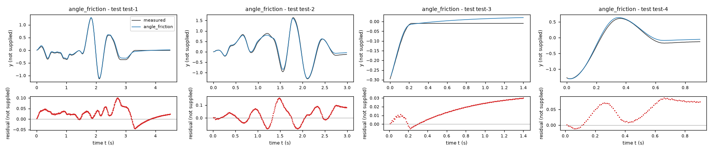
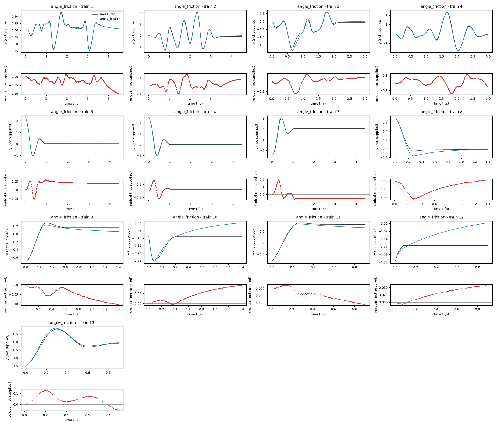
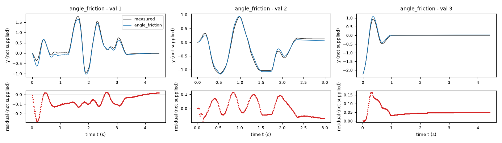
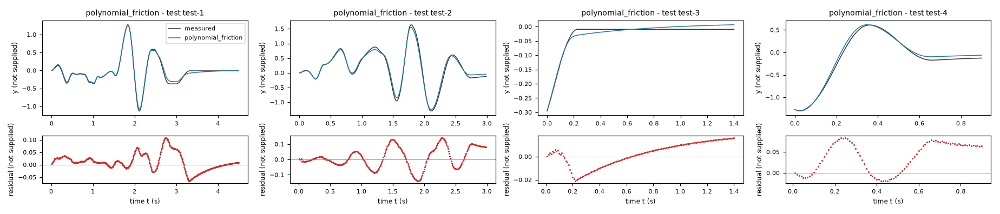
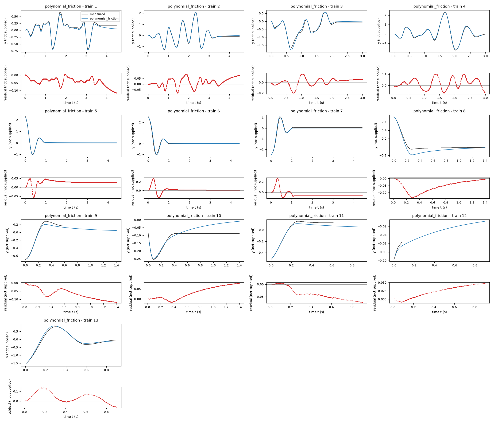
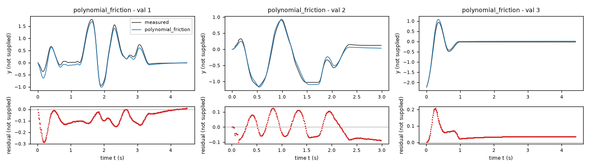
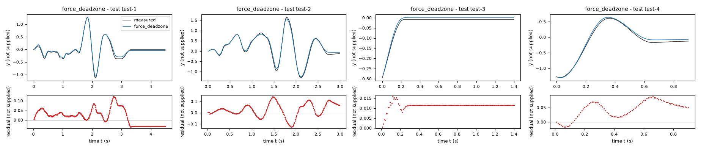
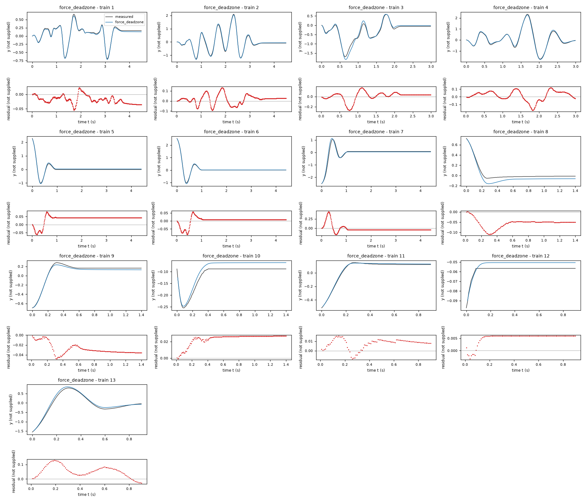
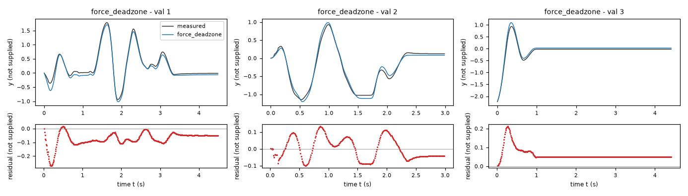

Identification task jdhj – run 3 of 5
Generated: 2026-10-08 01:24 UTC
Finished by the agent after 36 turns, 545 s of execution time and 1.54 USD. 3 models delivered, 3 evaluated.
1 Models
| Model | Fitted parameters | Training error of y | Validation error | Test error of y | |
|---|---|---|---|---|---|
| angle_friction | 8 | 0.05369 | 0.0722 | 0.04491 | recommended by the agent lowest test error |
| polynomial_friction | 8 | 0.05637 | 0.07661 | 0.0477 | |
| force_deadzone | 9 | 0.05612 | 0.07537 | 0.04933 |
The models are listed in the agent's order. Errors: root mean squared error between simulated and measured y. Training data: 13 trajectories of 91 to 450 samples (3509 scored samples). Test data, which the agent cannot access: 4 trajectories of 91 to 450 samples (978 scored samples). A simulation error grows with the length of the trajectory, and the training and the test trajectories differ in length, so the two errors are not directly comparable. The agent recommends a model from the training data. The model with the lowest test error is found with the test data, in hindsight, among the 3 models of this run; the agent could not make this choice.
y, over data/val.csv after each initial sample. Position-dependent regularized friction also improved training rollout fit. The transition width in the unspecified unit of x1 avoids the numerically stiff narrow-width optimum. All final models were refitted on combined training and validation data; their final validation errors are calibration results, not independent tests. The polynomial and static-force-deadzone candidates provide alternatives to the assumed periodic restoring and friction structure.a = -114.2 U_x1/s (fitted), b = -1.292 s^-1 (fitted), c = 29.07 U_x1/(s*U_x2) (fitted), d = 0.1392 U_x1/s (fitted), e = -31.1 U_x1/s (fitted), w = 0.3 U_x1 (fitted), h = 3.04 U_x1/s (fitted), j = -0.254 (fitted)y: 0.05369 · validation error: 0.0722 · test error: 0.04491Equations as written in the model file
dy = x1
dx1 = a*sin(y) + h*cos(y) + b*x1 + c*x2 + d + e*tanh(x1/w)*(1 + j*cos(y))
Equations with the values substituted
Every parameter is replaced by its value with 4 significant digits.
Parameters and estimation
| Name | Value | Unit | Type | Description |
|---|---|---|---|---|
a | -114.165 | U_x1/s | fitted | restoring-law coefficient. |
b | -1.29153 | s^-1 | fitted | linear velocity coefficient. |
c | 29.0661 | U_x1/(s*U_x2) | fitted | input gain. |
d | 0.139161 | U_x1/s | fitted | constant acceleration bias. |
e | -31.1011 | U_x1/s | fitted | signed smooth-friction amplitude. |
w | 0.3 | U_x1 | fitted | smooth-friction velocity transition scale. Selected from the validation width grid before the final combined-data coefficient fit; held constant during that final fit. |
h | 3.04049 | U_x1/s | fitted | cosine restoring coefficient. |
j | -0.254006 | - | fitted | position modulation coefficient. |
- Criterion minimized
Sum of squared free-running errors in
y, excluding the initial sample of every trajectory. Equal per-sample weight matches the announced output-RMSE score; no derivative residual was included in the final criterion.- Data
Final fitting used all 3522 rows of data/train.csv (13 separate trajectories) and all 1192 rows of data/val.csv (3 separate trajectories), treating same-numbered trajectories in different files as distinct experiments. Each first row supplies the two measured initial states and is not scored. The final data combine all supplied experiments to reduce coefficient uncertainty after training-only structure screening and validation-based choices. Counts are dimensionless. No other data were used. The system, intended use and physical units are unknown. Define U_y, U_x1 and U_x2 as the unspecified numerical units of
y,x1andx2; seconds are supplied for time. The kinematic model assumes U_x1 = U_y/s. Trigonometric arguments use the supplied numerical coordinate without an identified unit conversion.- Method
The parameter
wwas first estimated by validation grid selection: training-only coefficient fits with , and U_x1 were compared, and U_x1 gave the lowest validation output RMSE among this grid. A freely fitted narrower transition had poorer validation and greater numerical stiffness. The remaining parameters were then estimated together on the combined data, holdingwat this selected value. The final method was bounded nonlinear least squares (trust-region reflective algorithm),scipy.optimize.least_squares, minimizing free-running output error rather than a derivative criterion becausedx1is a quantized centered-difference target. Model predictions used classical fourth-order Runge-Kutta with s, loggedx2constant within each step, and no state resets after each measured trajectory initial condition. Starts were the corresponding training-only fits: U_x1/s; s^-1; U_x1/(s*U_x2); U_x1/s; U_x1/s; U_x1/s; . Bounds were U_x1/s; s^-1; U_x1/(s*U_x2); U_x1/s; U_x1/s; U_x1/s; . The sign constraints enforce restoring and dissipative effects; finite search limits keep parameters in the derivative-screening scale, and positive transition widths avoid division by zero. Settings were , , , , and (dimensionless numerical settings); remaining arguments used SciPy defaults. The final fit used 10 function evaluations, a dimensionless count. No random numbers or seed were used. The complete starting values, bounds, results and residual diagnostics are saved in final_fit_results.json. Python NumPy, SciPy and Numba compiled RK4 were used; Numba version 0.68.0. Reproduction: run fit_final.py then write_models.py; preceding width selection is in width_check.py with supporting explore_models.py and stick_models.py.- Script
fit_final.py
The agent's explanation
Trigonometric nonlinear state-space oscillator with position-modulated, regularized Coulomb friction. Friction background: B. Armstrong-Helouvry, P. Dupont and C. Canudas de Wit, A survey of models, analysis tools and compensation methods for the control of machines with friction, Automatica 30(7), 1083-1138 (1994). This bibliographic reference is cited from memory, not verified online; none of the formulas here is asserted to be its exact model.
The imposed kinematic equation is . The terms and provide a restoring force with an allowed shift in its numerical origin; interpreting the numerical coordinate as an angle is an assumption, not supplied metadata. The term damps velocity, transmits the measured input, and d gives a constant acceleration bias. The term opposes motion with a smooth transition of width w, and a periodic position-dependent magnitude. The fitted and make this term dissipative. Position-dependent friction is an empirical effect, not a confirmed load mechanism.
Inspection found x1 and dx1 to be centered finite differences of quantized states, motivating and rollout fitting. An affine model left substantial acceleration residuals. Hypothesized sine restoring force and smooth sign friction improved fits; a cosine term allowed coordinate-origin error. Residuals at small and intermediate speeds motivated trials of speed-dependent friction, input nonlinearities, second harmonics, and position-dependent friction. The chosen modulation reduced training rollout error and modestly improved validation. Its operator and variable choices were proposed manually, not obtained by symbolic regression. Larger smoothing widths further improved validation and numerical conditioning.
The system, intended use and physical units are unknown. Define U_y, U_x1 and U_x2 as the unspecified numerical units of y, x1 and x2; seconds are supplied for time. The kinematic model assumes U_x1 = U_y/s. Trigonometric arguments use the supplied numerical coordinate without an identified unit conversion. Initial states are measured; no extra memory, input delay or unmeasured dynamics is represented. Quantization and centered-difference targets limit friction identification. Final estimates use validation too, so final validation errors are in-sample, not an unbiased generalization estimate. No test data were accessed. The friction modulation and constant bias may compensate unmeasured effects rather than identify unique physical parameters. Periodicity outside the measured coordinate range is an assumption. The prior training-only validation rollout U_y used data/val.csv, excluding each first sample. Final calibration rollout U_y on data/train.csv and U_y on data/val.csv are in-sample. Final acceleration residual U_x1/s on training rows and U_x1/s on validation rows are much larger relative to their targets; transient and intermediate-speed behavior remains imperfect. No accuracy beyond the supplied ranges is established.
Plots of simulated and measured y, and errors per trajectory



| Data | Trajectory | Scored samples | RMSE | NRMSE | R² | Failure |
|---|---|---|---|---|---|---|
| training data | 1 | 449 of 449 | 0.03714 | 0.1448 | 0.979 | none |
| training data | 2 | 449 of 449 | 0.05535 | 0.08305 | 0.9931 | none |
| training data | 3 | 299 of 299 | 0.07943 | 0.1682 | 0.9717 | none |
| training data | 4 | 299 of 299 | 0.06018 | 0.07344 | 0.9946 | none |
| training data | 5 | 441 of 441 | 0.04326 | 0.113 | 0.9872 | none |
| training data | 6 | 441 of 441 | 0.0455 | 0.09967 | 0.9901 | none |
| training data | 7 | 441 of 441 | 0.0597 | 0.1151 | 0.9868 | none |
| training data | 8 | 140 of 140 | 0.05354 | 0.326 | 0.8937 | none |
| training data | 9 | 140 of 140 | 0.0591 | 0.2702 | 0.927 | none |
| training data | 10 | 140 of 140 | 0.05319 | 1.082 | -0.1702 | none |
| training data | 11 | 90 of 90 | 0.02997 | 0.1821 | 0.9668 | none |
| training data | 12 | 90 of 90 | 0.03611 | 7.078 | -49.1 | none |
| training data | 13 | 90 of 90 | 0.06294 | 0.1158 | 0.9866 | none |
| validation data | 1 | 449 of 449 | 0.08989 | 0.1644 | 0.973 | none |
| validation data | 2 | 299 of 299 | 0.05504 | 0.09843 | 0.9903 | none |
| validation data | 3 | 441 of 441 | 0.06143 | 0.1634 | 0.9733 | none |
| test data | test-1 | 449 of 449 | 0.03556 | 0.09419 | 0.9911 | none |
| test data | test-2 | 299 of 299 | 0.06006 | 0.09718 | 0.9906 | none |
| test data | test-3 | 140 of 140 | 0.01874 | 0.3541 | 0.8746 | none |
| test data | test-4 | 90 of 90 | 0.05544 | 0.105 | 0.989 | none |
RMSE of y; NRMSE = RMSE / σ and R² = 1 − SSE / Σ(y[k] − μ)², with μ and σ the mean and the population standard deviation of the measured output on the scored samples.
a = -112.6 U_x1/(s*U_y) (fitted), b = -1.592 s^-1 (fitted), c = 28.54 U_x1/(s*U_x2) (fitted), d = 1.592 U_x1/s (fitted), e = -22.38 U_x1/s (fitted), w = 0.3 U_x1 (fitted), h = 17.71 U_x1/(s*U_y^3) (fitted), j = -0.4384 U_x1/(s*U_y^5) (fitted)y: 0.05637 · validation error: 0.07661 · test error: 0.0477Equations as written in the model file
dy = x1
dx1 = a*y + h*y**3 + j*y**5 + b*x1 + c*x2 + d + e*tanh(x1/w)
Equations with the values substituted
Every parameter is replaced by its value with 4 significant digits.
Parameters and estimation
| Name | Value | Unit | Type | Description |
|---|---|---|---|---|
a | -112.645 | U_x1/(s*U_y) | fitted | restoring-law coefficient. |
b | -1.59152 | s^-1 | fitted | linear velocity coefficient. |
c | 28.5407 | U_x1/(s*U_x2) | fitted | input gain. |
d | 1.59225 | U_x1/s | fitted | constant acceleration bias. |
e | -22.3832 | U_x1/s | fitted | signed smooth-friction amplitude. |
w | 0.3 | U_x1 | fitted | smooth-friction velocity transition scale. Selected from the validation width grid before the final combined-data coefficient fit; held constant during that final fit. |
h | 17.7053 | U_x1/(s*U_y^3) | fitted | cubic restoring coefficient. |
j | -0.438406 | U_x1/(s*U_y^5) | fitted | quintic restoring coefficient. |
- Criterion minimized
Sum of squared free-running errors in
y, excluding the initial sample of every trajectory. Equal per-sample weight matches the announced output-RMSE score; no derivative residual was included in the final criterion.- Data
Final fitting used all 3522 rows of data/train.csv (13 separate trajectories) and all 1192 rows of data/val.csv (3 separate trajectories), treating same-numbered trajectories in different files as distinct experiments. Each first row supplies the two measured initial states and is not scored. The final data combine all supplied experiments to reduce coefficient uncertainty after training-only structure screening and validation-based choices. Counts are dimensionless. No other data were used. The system, intended use and physical units are unknown. Define U_y, U_x1 and U_x2 as the unspecified numerical units of
y,x1andx2; seconds are supplied for time. The kinematic model assumes U_x1 = U_y/s. Trigonometric arguments use the supplied numerical coordinate without an identified unit conversion.- Method
The parameter
wwas first estimated by validation grid selection: training-only coefficient fits with , and U_x1 were compared, and U_x1 gave the lowest validation output RMSE among this grid. A freely fitted narrower transition had poorer validation and greater numerical stiffness. The remaining parameters were then estimated together on the combined data, holdingwat this selected value. The final method was bounded nonlinear least squares (trust-region reflective algorithm),scipy.optimize.least_squares, minimizing free-running output error rather than a derivative criterion becausedx1is a quantized centered-difference target. Model predictions used classical fourth-order Runge-Kutta with s, loggedx2constant within each step, and no state resets after each measured trajectory initial condition. Starts were the corresponding training-only fits: U_x1/(s*U_y); s^-1; U_x1/(s*U_x2); U_x1/s; U_x1/s; U_x1/(s*U_y^3); U_x1/(s*U_y^5). Bounds were U_x1/(s*U_y); s^-1; U_x1/(s*U_x2); U_x1/s; U_x1/s; U_x1/(s*U_y^3); U_x1/(s*U_y^5). The sign constraints enforce restoring and dissipative effects; finite search limits keep parameters in the derivative-screening scale, and positive transition widths avoid division by zero. Settings were , , , , and (dimensionless numerical settings); remaining arguments used SciPy defaults. The final fit used 6 function evaluations, a dimensionless count. No random numbers or seed were used. The complete starting values, bounds, results and residual diagnostics are saved in final_fit_results.json. Python NumPy, SciPy and Numba compiled RK4 were used; Numba version 0.68.0. Reproduction: run fit_final.py then write_models.py; preceding width selection is in width_check.py with supporting explore_models.py and stick_models.py.- Script
fit_final.py
The agent's explanation
Fifth-order polynomial nonlinear state-space oscillator with regularized Coulomb friction. Friction background: B. Armstrong-Helouvry, P. Dupont and C. Canudas de Wit, A survey of models, analysis tools and compensation methods for the control of machines with friction, Automatica 30(7), 1083-1138 (1994). This bibliographic reference is cited from memory, not verified online; none of the formulas here is asserted to be its exact model.
The imposed kinematic equation is . The terms form an odd polynomial restoring law: negative linear and quintic coefficients oppose large displacement, while the positive cubic coefficient softens the law at intermediate displacement. The term damps velocity; transmits input; d shifts equilibrium. The term approximates motion-opposing friction smoothly. These are mathematical effects; no physical units or apparatus are known.
This family was specified before fitting as a polynomial alternative to an assumed angular coordinate. The odd powers y, , and approximate a symmetric softening restoring law without trigonometric operators; fifth order was included to permit high-amplitude curvature while keeping a negative leading coefficient. The derivative-derived kinematic structure and successful smooth-friction trial supplied and . Coefficients and powers were not selected by a symbolic-regression engine or sparse-regression algorithm. Rational restoring-force trials were less accurate on validation and were not retained.
The system, intended use and physical units are unknown. Define U_y, U_x1 and U_x2 as the unspecified numerical units of y, x1 and x2; seconds are supplied for time. The kinematic model assumes U_x1 = U_y/s. Trigonometric arguments use the supplied numerical coordinate without an identified unit conversion. Initial states are measured; no extra memory, input delay or unmeasured dynamics is represented. Quantization and centered-difference targets limit friction identification. Final estimates use validation too, so final validation errors are in-sample, not an unbiased generalization estimate. No test data were accessed. High-order polynomial extrapolation can produce strong, fast accelerations outside the calibration range; it should not be interpreted as periodic motion. The prior training-only validation rollout U_y used data/val.csv, excluding each first sample. Final calibration rollout U_y on data/train.csv and U_y on data/val.csv are in-sample. Final acceleration residual U_x1/s on training rows and U_x1/s on validation rows are much larger relative to their targets; transient and intermediate-speed behavior remains imperfect. No accuracy beyond the supplied ranges is established.
Plots of simulated and measured y, and errors per trajectory



| Data | Trajectory | Scored samples | RMSE | NRMSE | R² | Failure |
|---|---|---|---|---|---|---|
| training data | 1 | 449 of 449 | 0.05007 | 0.1952 | 0.9619 | none |
| training data | 2 | 449 of 449 | 0.04185 | 0.0628 | 0.9961 | none |
| training data | 3 | 299 of 299 | 0.07092 | 0.1502 | 0.9774 | none |
| training data | 4 | 299 of 299 | 0.04864 | 0.05936 | 0.9965 | none |
| training data | 5 | 441 of 441 | 0.03135 | 0.0819 | 0.9933 | none |
| training data | 6 | 441 of 441 | 0.06161 | 0.135 | 0.9818 | none |
| training data | 7 | 441 of 441 | 0.07718 | 0.1488 | 0.9779 | none |
| training data | 8 | 140 of 140 | 0.06604 | 0.4021 | 0.8383 | none |
| training data | 9 | 140 of 140 | 0.0751 | 0.3434 | 0.8821 | none |
| training data | 10 | 140 of 140 | 0.04394 | 0.8936 | 0.2015 | none |
| training data | 11 | 90 of 90 | 0.04624 | 0.281 | 0.9211 | none |
| training data | 12 | 90 of 90 | 0.02937 | 5.755 | -32.12 | none |
| training data | 13 | 90 of 90 | 0.06246 | 0.115 | 0.9868 | none |
| validation data | 1 | 449 of 449 | 0.09733 | 0.178 | 0.9683 | none |
| validation data | 2 | 299 of 299 | 0.06717 | 0.1201 | 0.9856 | none |
| validation data | 3 | 441 of 441 | 0.05586 | 0.1486 | 0.9779 | none |
| test data | test-1 | 449 of 449 | 0.03544 | 0.09386 | 0.9912 | none |
| test data | test-2 | 299 of 299 | 0.0685 | 0.1108 | 0.9877 | none |
| test data | test-3 | 140 of 140 | 0.01047 | 0.1979 | 0.9609 | none |
| test data | test-4 | 90 of 90 | 0.05194 | 0.09837 | 0.9903 | none |
RMSE of y; NRMSE = RMSE / σ and R² = 1 − SSE / Σ(y[k] − μ)², with μ and σ the mean and the population standard deviation of the measured output on the scored samples.
a = -112 U_x1/s (fitted), b = -1.593 s^-1 (fitted), c = 28.53 U_x1/(s*U_x2) (fitted), d = -0.7776 U_x1/s (fitted), e = 22.07 U_x1/s (fitted), w = 0.412 U_x1 (fitted), h = 4.424 U_x1/s (fitted), j = 0.2191 U_x1 (fitted), s = 10.46 U_x1/s (fitted)y: 0.05612 · validation error: 0.07537 · test error: 0.04933Equations as written in the model file
dy = x1
dx1 = a*sin(y) + h*cos(y) + b*x1 + c*x2 + d - e*tanh(x1/w) - Min(Max((a*sin(y) + h*cos(y) + b*x1 + c*x2 + d), -s), s)*exp(-(x1/j)**2)
Equations with the values substituted
Every parameter is replaced by its value with 4 significant digits.
Parameters and estimation
| Name | Value | Unit | Type | Description |
|---|---|---|---|---|
a | -112.001 | U_x1/s | fitted | restoring-law coefficient. |
b | -1.59314 | s^-1 | fitted | linear velocity coefficient. |
c | 28.5268 | U_x1/(s*U_x2) | fitted | input gain. |
d | -0.777595 | U_x1/s | fitted | constant acceleration bias. |
e | 22.0735 | U_x1/s | fitted | positive kinetic-friction acceleration scale. |
w | 0.412022 | U_x1 | fitted | smooth-friction velocity transition scale. |
h | 4.42421 | U_x1/s | fitted | cosine restoring coefficient. |
j | 0.219122 | U_x1 | fitted | velocity scale for fading the static-force cancellation. |
s | 10.4601 | U_x1/s | fitted | static-force acceleration cancellation threshold. |
- Criterion minimized
Sum of squared free-running errors in
y, excluding the initial sample of every trajectory. Equal per-sample weight matches the announced output-RMSE score; no derivative residual was included in the final criterion.- Data
Final fitting used all 3522 rows of data/train.csv (13 separate trajectories) and all 1192 rows of data/val.csv (3 separate trajectories), treating same-numbered trajectories in different files as distinct experiments. Each first row supplies the two measured initial states and is not scored. The final data combine all supplied experiments to reduce coefficient uncertainty after training-only structure screening and validation-based choices. Counts are dimensionless. No other data were used. The system, intended use and physical units are unknown. Define U_y, U_x1 and U_x2 as the unspecified numerical units of
y,x1andx2; seconds are supplied for time. The kinematic model assumes U_x1 = U_y/s. Trigonometric arguments use the supplied numerical coordinate without an identified unit conversion.- Method
All nine parameters were estimated together in the final combined-data step. Two starting values for the low-speed cancellation scale and two candidate cancellation structures had previously been screened using training-only fitting and validation rollout comparison. The final method was bounded nonlinear least squares (trust-region reflective algorithm),
scipy.optimize.least_squares, minimizing free-running output error rather than a derivative criterion becausedx1is a quantized centered-difference target. Model predictions used classical fourth-order Runge-Kutta with s, loggedx2constant within each step, and no state resets after each measured trajectory initial condition. Starts were the corresponding training-only fits: U_x1/s; s^-1; U_x1/(s*U_x2); U_x1/s; U_x1/s; U_x1; U_x1/s; U_x1; U_x1/s. Bounds were U_x1/s; s^-1; U_x1/(s*U_x2); U_x1/s; U_x1/s; U_x1; U_x1/s; U_x1; U_x1/s. The sign constraints enforce restoring and dissipative effects; finite search limits keep parameters in the derivative-screening scale, and positive transition widths avoid division by zero. Settings were , , , , and (dimensionless numerical settings); remaining arguments used SciPy defaults. The final fit used 21 function evaluations, a dimensionless count. No random numbers or seed were used. The complete starting values, bounds, results and residual diagnostics are saved in final_fit_results.json. Python NumPy, SciPy and Numba compiled RK4 were used; Numba version 0.68.0. Reproduction: run fit_final.py then write_models.py; preceding width selection is in width_check.py with supporting explore_models.py and stick_models.py.- Script
fit_final.py
The agent's explanation
Trigonometric nonlinear state-space oscillator with a velocity-weighted static-force deadzone and regularized Coulomb friction. Friction background: B. Armstrong-Helouvry, P. Dupont and C. Canudas de Wit, A survey of models, analysis tools and compensation methods for the control of machines with friction, Automatica 30(7), 1083-1138 (1994). This bibliographic reference is cited from memory, not verified online; none of the formulas here is asserted to be its exact model.
The imposed kinematic equation is . Define the un-clipped acceleration, only as a shorthand in this text, by . The sine and cosine terms restore displacement with an allowed numerical-origin shift; damps velocity, transmits input, and d biases acceleration. The term opposes motion. The term cancels the force up to the threshold s at rest, fading on the speed scale j. At and , the acceleration is zero. This allows a continuum of resting positions, unlike the other two smooth-friction families. The shorthand F is expanded in the delivered expression.
The other models leave nonzero predicted accelerations at measured zero speed, where many experiments show nearly constant, different resting positions. This motivated a manually proposed clipped-force deadzone, with restricting cancellation to low speed. Two blend structures and two starting speed widths were tried. This additive cancellation structure permits exact resting equilibria and was retained as a distinct structural alternative, although its held-out rollout error was worse than the recommended model. No claim of a measured static-friction threshold is made.
The system, intended use and physical units are unknown. Define U_y, U_x1 and U_x2 as the unspecified numerical units of y, x1 and x2; seconds are supplied for time. The kinematic model assumes U_x1 = U_y/s. Trigonometric arguments use the supplied numerical coordinate without an identified unit conversion. Initial states are measured; no extra memory, input delay or unmeasured dynamics is represented. Quantization and centered-difference targets limit friction identification. Final estimates use validation too, so final validation errors are in-sample, not an unbiased generalization estimate. No test data were accessed. The clipped-force threshold and speed widths are correlated and are not uniquely established as mechanical friction properties. The exponential fade is an empirical interpolation, not a constitutive law. The prior training-only validation rollout U_y used data/val.csv, excluding each first sample. Final calibration rollout U_y on data/train.csv and U_y on data/val.csv are in-sample. Final acceleration residual U_x1/s on training rows and U_x1/s on validation rows are much larger relative to their targets; transient and intermediate-speed behavior remains imperfect. No accuracy beyond the supplied ranges is established.
Plots of simulated and measured y, and errors per trajectory



| Data | Trajectory | Scored samples | RMSE | NRMSE | R² | Failure |
|---|---|---|---|---|---|---|
| training data | 1 | 449 of 449 | 0.02303 | 0.08979 | 0.9919 | none |
| training data | 2 | 449 of 449 | 0.049 | 0.07353 | 0.9946 | none |
| training data | 3 | 299 of 299 | 0.08583 | 0.1817 | 0.967 | none |
| training data | 4 | 299 of 299 | 0.06613 | 0.08069 | 0.9935 | none |
| training data | 5 | 441 of 441 | 0.04387 | 0.1146 | 0.9869 | none |
| training data | 6 | 441 of 441 | 0.02415 | 0.0529 | 0.9972 | none |
| training data | 7 | 441 of 441 | 0.09534 | 0.1837 | 0.9662 | none |
| training data | 8 | 140 of 140 | 0.05959 | 0.3628 | 0.8683 | none |
| training data | 9 | 140 of 140 | 0.03027 | 0.1384 | 0.9808 | none |
| training data | 10 | 140 of 140 | 0.02421 | 0.4924 | 0.7575 | none |
| training data | 11 | 90 of 90 | 0.009264 | 0.05629 | 0.9968 | none |
| training data | 12 | 90 of 90 | 0.005556 | 1.089 | -0.1859 | none |
| training data | 13 | 90 of 90 | 0.0659 | 0.1213 | 0.9853 | none |
| validation data | 1 | 449 of 449 | 0.08792 | 0.1608 | 0.9741 | none |
| validation data | 2 | 299 of 299 | 0.06431 | 0.115 | 0.9868 | none |
| validation data | 3 | 441 of 441 | 0.06813 | 0.1813 | 0.9671 | none |
| test data | test-1 | 449 of 449 | 0.04393 | 0.1164 | 0.9865 | none |
| test data | test-2 | 299 of 299 | 0.06454 | 0.1044 | 0.9891 | none |
| test data | test-3 | 140 of 140 | 0.01139 | 0.2151 | 0.9537 | none |
| test data | test-4 | 90 of 90 | 0.0527 | 0.09981 | 0.99 | none |
RMSE of y; NRMSE = RMSE / σ and R² = 1 − SSE / Σ(y[k] − μ)², with μ and σ the mean and the population standard deviation of the measured output on the scored samples.
2 Course of the run
The system prompt, TASK.md and FORMAT.md that the agent received are shown on the page of the experiment.
0:00Harness: opening message to the agent
10:04Read TASK.md0.01
5,474 input and 19 output tokens; 0.011 USD for this turn.
TASK.md
output as sent to the agent (3,688 characters, 38 lines)
[TASK.md: 3661 characters] # Task: Identification task jdhj ## 1 System and intended use The task gives no description of the system. The task states no intended use of the model. ## 2 Data `data/train.csv` holds 3522 samples of training data: 13 trajectories of 450, 450, 300, 300, 442, 442, 442, 141, 141, 141, 91, 91, 91 consecutive samples; the column `trajectory` holds the trajectory number. `data/val.csv` holds 1192 samples of validation data: 3 trajectories of 450, 300, 442 consecutive samples; the column `trajectory` holds the trajectory number. Whether and how you use the validation data is your decision. Row k+1 of a trajectory is the sample that follows row k; different trajectories are separate experiments. The sampling period is T_s = 0.01 s. | Column | Role | Unit | Training range | Description | |---|---|---|---|---| | `y` | state, scored output | not supplied | not declared | not supplied | | `x1` | state | not supplied | not declared | not supplied | | `x2` | input | not supplied | not declared | not supplied | | `dx1` | sampled time derivative of `x1` | not supplied | not declared | not supplied | The task does not state the units. The task does not describe the columns. ## 3 What you deliver A candidate is a continuous-time model of 2 closed-form expressions, `dy` and `dx1`: the time derivatives of the states `y` and `x1` as functions of `y`, `x1` and `x2`. The column `dx1` is a possible fitting target for the derivative of `x1`; it is not an argument of the expressions. `FORMAT.md` states how an expression is written and what it may contain. Write one file per candidate, `models/<label>.json`; `FORMAT.md` describes the file and gives an example. Write also `models/pool.json`, which lists the labels of your candidates in the order in which they are to be evaluated. You can recommend one candidate that you consider the best-performing. `models/pool.json` then names that candidate and gives your reason. Run `python check_submission.py` to check your files: it prints every error with its location, so that you can correct it. At most 10 candidates are evaluated, in the order of `models/pool.json`. Consider various identification approaches, for example physically motivated structures, symbolic-regression search or sparse regression; before fitting, list the approaches and the model families you will try. Build the pool from structurally different model families, not from variations of one form. Examine the residuals of your best candidates and try structures that can represent what they show. Include only candidates you would defend as a model of the system. ## 4 Evaluation The harness, the software that runs this task, evaluates every candidate on test data that you cannot access. For each test trajectory it starts from the first logged state and integrates the expressions with the classical fourth-order Runge–Kutta method, one step per sampling period, with the logged inputs held constant between samples; a simulated state is never replaced by a later measurement. The score is the root mean squared error (RMSE) between simulated and logged `y` over all test samples after the first of each trajectory. An evaluation fails when a value is not finite, when `y` leaves [-1000, 1000] or `x1` leaves [-1000, 1000], or when it takes longer than 60 s. ## 5 Limits and completion One round: 60 turns, 3600 s of execution time, 10 USD; a turn is one response of yours. When the files pass the check, send the exact message DONE. If the harness's check of the files then fails, you receive its report and may correct the files once. If a limit ends the round earlier, the complete candidate files are evaluated.
20:06Read FORMAT.md0.02
6,371 input and 19 output tokens; 0.013 USD for this turn.
FORMAT.md
output as sent to the agent (8,159 characters, 128 lines)
[FORMAT.md: 8130 characters]
# Model file format
This file is the same for every task. `TASK.md` names the expression keys, the variables and the permitted functions of your task.
## Candidate file `models/<label>.json`
Write one JSON file per candidate. The label is the file name: a letter, then up to 31 letters, digits, `_` or `-`. The file has these fields and no others:
- `expressions`: one expression text per expression key named in `TASK.md`.
- `parameters`: one row per parameter. A parameter is a constant of the expressions that you name yourself, for example `a1`. Its row has
- `name`: the name used in the expressions: a letter, then letters, digits or `_`; it differs from every column, expression key, constant and function name;
- `value`: the numerical value;
- `unit`: the unit; `-` for a dimensionless quantity;
- `type`: `fitted` (estimated from data), `fixed` (chosen or known, not estimated) or `tied` (computed from other parameters by `equation`);
- `description`: what the parameter represents; for a fixed value, where the value comes from and why it was chosen; for a value taken over from another candidate or an earlier fit, from which one;
- `equation`: for a tied parameter only: its defining equation over other parameters, given constants and numbers.
- `estimation`: how the values of the fitted parameters of this candidate were obtained and why in this way; for every fitted parameter it must be clear how its value was found. Write the record for this candidate model, not for the run as a whole: its own criterion, data, method and starting values, with the reasons that apply to this candidate. The record has
- `criterion`: what was minimized, on which variable, and why this criterion;
- `data`: the files, trajectories or rows used, and the reason when some were left out;
- `method`: how the values were estimated: the estimation method by its established name and the software function, and why this method and not another; the starting values as numbers, or the statement that the method needs none, and why these starting values; whether all fitted parameters were estimated together in one step and, if not, which parameters were estimated in which step, with which criterion, and why; the seeds where they apply;
- `script`: the file in the working directory that reproduces the values.
- `discussion`: four texts, in this order:
- `family`: the model family by its established name, with a reference where you know one;
- `interpretation`: what each term represents in the system; describe a term without a known physical meaning by its mathematical effect;
- `origin`: how you arrived at the structure of this expression, as distinct from its parameter values, which `estimation` covers: say which of its terms, variables and operators came from physical reasoning, which from a search and which from a guess, what you tried before, and what made you change it;
- `limitations`: what the data do not determine and where the model is not expected to hold.
- `answers`: only when `TASK.md` asks questions about the candidates: one text per question identifier.
- `predecessor`: only in a later round of an interactive session, and optional: the label of the candidate of the previous pool that this candidate revises.
## Expressions
An expression is a text in Python syntax. It may contain:
- the variables that `TASK.md` names as the arguments of the expression;
- your parameters, each with a row in `parameters`;
- the constants `pi` and `E`, the given constants that `TASK.md` lists, and numbers;
- these operators and functions, unless `TASK.md` states another list: `+` `-` `*` `/` `**` `sin` `cos` `tan` `asin` `acos` `atan` `atan2` `sinh` `cosh` `tanh` `exp` `log` `sqrt` `Abs` `sign` `Min` `Max` `Piecewise`.
`**` is the power (not `^`), and `log` is the natural logarithm. `Piecewise` takes pairs `(value, condition)` and ends with a pair `(value, True)`, for example `Piecewise((a1*q, (q > 0) & (q < 1)), (0, True))`. A condition is a comparison `<`, `<=`, `>`, `>=`, `Eq(a, b)` or `Ne(a, b)`, each in parentheses, combined with `&`, `|` and `~`.
A number that fixes the form of the expression, such as 2 in `q**2`, may be written directly. A value obtained by estimation is a parameter with a row in `parameters`, never a number written into the expression. Every parameter row must be used in an expression or in a tie equation.
## Pool file `models/pool.json`
- `order`: the candidate labels in your order;
- `recommended`: the label of the candidate you recommend, or `null` when you recommend none;
- `reason`: why you recommend this candidate, or why you recommend none.
Every file `models/<label>.json` must be listed in `order`.
## Example
An invented task with one input `q` and one output `z`, whose expression key is `z`. The example shows the format only: its model is not a proposal, and its discussion texts say what your texts must contain.
`models/M01.json`:
```json
{
"expressions": {
"z": "a1*q + b1*q**2/n0"
},
"parameters": [
{
"name": "a1",
"value": 0.5,
"unit": "-",
"type": "fitted",
"description": "coefficient of `q`"
},
{
"name": "n0",
"value": 2.0,
"unit": "-",
"type": "fixed",
"description": "normalisation of the quadratic term; chosen as the largest value of `q` in the training data, so that `b1` has the scale of `a1`"
},
{
"name": "b1",
"value": 1.0,
"unit": "-",
"type": "tied",
"equation": "2*a1",
"description": "coefficient of `q**2/n0`, tied to `a1` by the assumption stated in the discussion"
}
],
"estimation": {
"criterion": "sum of squared differences between the expression `z` and the column `z`, because the expression gives `z` directly and no row is known to be more accurate than another",
"data": "data/train.csv, all rows",
"method": "The value of `a1` was estimated by ordinary least squares with numpy.linalg.lstsq. With `b1 = 2*a1` the expression is linear in the one fitted parameter `a1`, so the least-squares solution is obtained directly and an iterative method is not needed; for the same reason the method needs no starting values. `a1` is the only fitted parameter and was estimated in one step. The method uses no random numbers, so that no seed applies.",
"script": "fit_M01.py"
},
"discussion": {
"family": "State the model family by its established name.",
"interpretation": "State what each term represents.",
"origin": "State how you arrived at this expression.",
"limitations": "State what the data do not determine and where the model is not expected to hold."
}
}
```
`models/pool.json`:
```json
{
"order": [
"M01"
],
"recommended": "M01",
"reason": "State why you recommend this candidate, or why you recommend none."
}
```
## Checking
`python check_submission.py` checks every file against these rules and evaluates each expression on the training data. It names each error with its rule. Correct the errors and run it again.
## Writing
- Define every symbol at first use.
- Give every number with its unit and the data it was computed on.
- Name methods by their established names.
- Cite a reference for a model family or a method where one applies. Cite only references you are certain exist, and say when you cite from memory without having checked the source.
- Say what is estimated, what is assumed and what is unknown.
- Give a brief reason for every choice you made: a structure, a criterion, a method, a starting value, a fixed value, a term you removed.
- Write every expression inside a text between backticks, in the syntax of the expressions, for example `a1*q**2`; write it out, do not describe it in words. This holds also for a single parameter, column or expression name, such as `a1`, for a value given to one, such as `a1 = 0.5`, and for a range, such as `0 <= a1 <= 2`. A unit follows outside the backticks; a dimensionless value has no unit and no hyphen after it.
- Describe a term without a known physical meaning by its mathematical effect; do not invent a meaning.
30:10Listed the files0.04
8,423 input and 114 output tokens (of which 12 reasoning); 0.018 USD for this turn.
reasoning summary (written by the model provider's summarizer; the model's own reasoning is not available)
Planning for fitting
I need to examine the list and make a plan before proceeding with the fitting. It's important to consider all the details to ensure everything comes together smoothly. I'm curious: What specific items should I focus on most? It feels like a lot to keep track of, but I'm confident that with a solid plan, I can handle it. Let’s dig in and figure this out!
I will first inspect the trajectories and derivative consistency. Before fitting, the model families I plan to try are: affine state-space models; sparse polynomial differential equations; and nonlinear restoring/damping models using saturation or trigonometric terms if the residuals support them. I will compare free-running RK4 simulations on validation trajectories, not just derivative fits, and document the estimation procedure for each submitted candidate.
{}output as sent to the agent (188 characters, 9 lines)
[.: 8 entries] data/ models/ FORMAT.md 8130 bytes TASK.md 3663 bytes check_config.json 985 bytes check_submission.py 102476 bytes data/train.csv 179789 bytes data/val.csv 65398 bytes
40:18Wrote inspect_data.py0.06
8,609 input and 421 output tokens; 0.021 USD for this turn.
inspect_data.py
file content written (1,056 characters)
import pandas as pd, numpy as np
from scipy.signal import savgol_filter
for file in ['train','val']:
d=pd.read_csv('data/'+file+'.csv');print(file,d.head(),d.describe().to_string())
for tid,g in d.groupby('trajectory',sort=False):
a=g[['y','x1','x2','dx1']].to_numpy();dy=np.gradient(a[:,0],.01);dx=np.gradient(a[:,1],.01)
print(tid,len(g),'ranges',np.round(np.min(a,axis=0),4),np.round(np.max(a,axis=0),4),'dy-x1',np.sqrt(np.mean((dy-a[:,1])**2)),'dx1 diff',np.sqrt(np.mean((dx-a[:,3])**2)))
np.set_printoptions(precision=8,suppress=True)
d=pd.read_csv('data/train.csv');Y=[];X=[];DX=[]
for _,g in d.groupby('trajectory',sort=False):
a=g[['y','x1','x2','dx1']].to_numpy();Y.extend(savgol_filter(a[:,0],11,4,deriv=1,delta=.01)[5:-5]);X.extend(a[5:-5,:3]);DX.extend(a[5:-5,3])
X=np.array(X);Y=np.array(Y);DX=np.array(DX)
for target,n in [(Y,'dy'),(DX,'dx1')]:
A=np.c_[np.ones(len(X)),X];c=np.linalg.lstsq(A,target,rcond=None)[0];r=target-A@c;print(n,'affine',c,'rmse',np.std(r),'targetstd',np.std(target))
np.savez('initial_data.npz',X=X,Y=Y,DX=DX)
output as sent to the agent (41 characters, 1 lines)
Wrote 1056 characters to inspect_data.py.
50:19Ran python inspect_data.py0.08
9,052 input and 21 output tokens; 0.018 USD for this turn.
$ python inspect_data.py
output as sent to the agent (4,619 characters, 47 lines)
[exit status 0] train y x1 x2 dx1 trajectory 0 0.000000 0.000000 1.286047 3.141593e+01 1 1 0.000000 0.314159 1.218545 2.356194e+01 1 2 0.006283 0.471239 1.087069 7.853982e+00 1 3 0.009425 0.471239 0.830988 7.853982e+00 1 4 0.015708 0.628319 0.332211 3.000000e-15 1 y x1 x2 dx1 trajectory count 3522.000000 3522.000000 3522.000000 3.522000e+03 3522.000000 mean -0.003704 0.001204 -0.062450 1.337987e-01 5.249574 std 0.497717 3.988737 1.120932 4.360072e+01 3.168541 min -2.513274 -20.106193 -4.945106 -1.963495e+02 1.000000 25% -0.087965 0.000000 0.000000 -6.700000e-14 2.000000 50% 0.001571 0.000000 0.000000 0.000000e+00 5.000000 75% 0.122522 0.471239 0.000000 6.900000e-14 7.000000 max 2.535265 14.451326 3.952501 1.806416e+02 13.000000 1 450 ranges [ -0.6943 -8.9535 -3.8953 -109.9557] [ 0.6629 5.8119 3.1774 157.0796] dy-x1 1.9006747793373112e-14 dx1 diff 1.333031525024241e-13 2 450 ranges [ -1.2849 -20.1062 -3.6138 -196.3495] [ 2.0923 14.4513 3.6098 180.6416] dy-x1 2.6759142310107612e-14 dx1 diff 2.9525430648685976e-13 3 300 ranges [ -1.6933 -9.4248 -4.9451 -125.6637] [ 0.5843 8.6394 3.9525 157.0796] dy-x1 2.1616418454772264e-14 dx1 diff 1.3285016315391091e-13 4 300 ranges [ -1.7342 -18.2212 -4.2573 -188.4956] [ 2.3342 13.3518 3.5825 172.7876] dy-x1 3.0505239197179115e-14 dx1 diff 2.8900933499111836e-13 5 442 ranges [ -1.0085 -14.7655 0. -78.5398] [ 2.2777 6.9115 0. 141.3717] dy-x1 0.022414548595573493 dx1 diff 0.3735758099261641 6 442 ranges [ -1.0179 -15.2367 0. -78.5398] [ 2.5353 7.0686 0. 149.2257] dy-x1 0.0074715161985213635 dx1 diff 0.3735758099260654 7 442 ranges [ -2.5133 -7.6969 0. -117.8097] [ 1.0556 13.823 0. 86.3938] dy-x1 1.1210397713792273e-14 dx1 diff 0.7471516198523895 8 141 ranges [ -0.0534 -4.0841 0. -47.1239] [ 0.7226 0.1571 0. 47.1239] dy-x1 0.0132284914421458 dx1 diff 2.017183919146265e-14 9 141 ranges [ -0.6943 -0.6283 0. -47.1239] [ 0.2827 4.8695 0. 78.5398] dy-x1 0.03968547432643134 dx1 diff 1.7315628033656795e-14 10 141 ranges [ -0.2545 -3.927 0. -15.708 ] [-0.088 0.7854 0. 54.9779] dy-x1 0.013228491442141159 dx1 diff 0.6614245721072866 11 91 ranges [ -0.5184 -0.3142 0. -39.2699] [ 0.1508 3.4558 0. 31.4159] dy-x1 1.6434478293387374e-14 dx1 diff 3.446877338272695e-14 12 91 ranges [ -0.0974 0. 0. -15.708 ] [-0.0565 0.7854 0. 0. ] dy-x1 0.01646641970957129 dx1 diff 0.8233209854787948 13 91 ranges [ -1.5551 -5.969 0. -102.1018] [ 0.798 11.1527 0. 70.6858] dy-x1 0.016466419709580984 dx1 diff 7.575612486628508e-14 val y x1 x2 dx1 trajectory 0 0.000000 -3.141593 -2.520031 94.247780 1 1 -0.031416 -2.199115 -2.519576 78.539816 1 2 -0.043982 -1.570796 -2.518690 23.561945 1 3 -0.062832 -1.727876 -2.516965 -54.977871 1 4 -0.078540 -2.670354 -2.513604 -39.269908 1 y x1 x2 dx1 trajectory count 1192.000000 1192.000000 1192.000000 1192.000000 1192.000000 mean 0.005324 0.194636 -0.044547 -0.013178 1.993289 std 0.537581 3.723961 1.471655 42.080756 0.865393 min -2.227389 -17.907078 -4.819706 -180.641578 1.000000 25% -0.035343 -0.157080 0.000000 -7.853982 1.000000 50% -0.021991 0.000000 0.000000 0.000000 2.000000 75% 0.126449 0.628319 0.000000 7.853982 3.000000 max 1.781283 13.194689 3.839543 212.057504 3.000000 1 450 ranges [ -0.9393 -17.9071 -2.912 -157.0796] [ 1.7813 10.5243 3.8395 212.0575] dy-x1 2.3011838359849206e-14 dx1 diff 2.196242310831854e-13 2 300 ranges [ -1.1498 -8.3252 -4.8197 -180.6416] [ 0.9299 8.3252 3.3797 133.5177] dy-x1 2.032380363492317e-14 dx1 diff 1.1693860025164257e-13 3 442 ranges [ -2.2274 -7.3827 0. -109.9557] [ 0.9362 13.1947 0. 78.5398] dy-x1 1.016031123176483e-14 dx1 diff 0.3735758099262206 dy affine [0.00007388 0.00009274 1.00105665 0.00156127] rmse 0.0523370066849822 targetstd 4.045436915315753 dx1 affine [ 1.35518978 -71.27047358 -3.84503473 25.03480925] rmse 15.670260935947663 targetstd 43.974764597542936
60:28Started a helper agent (Inspect train/val data and independently explore nonlinear dx1 struct…)0.11
11,350 input and 161 output tokens (of which 50 reasoning); 0.024 USD for this turn.
reasoning summary (written by the model provider's summarizer; the model's own reasoning is not available)
Exploring pendulum dynamics
I'm looking into the dynamics of a pendulum, focusing on the dry friction aspects. I see that the differential equation involves parameters like sin(y) and x, possibly along with some nonlinear factors. I need to think about how to smooth the dynamics and fit the friction model into my analysis. It might make sense to send out some helpers for a nonlinear exploratory approach, especially if there's a budget available for resources.
{
"task": "Inspect train/val data and independently explore nonlinear dx1 structure (dy=x1). Focus physically plausible pendulum restoring force, Coulomb friction, input nonlinearities. You may fit and evaluate using your own scripts named helper_*. Do not write models files. Report best structures coefficients residual and validation rollout. Data dx1 is central differences from quantized y/x1. No need browse unless external technical claims. Max 10 turns.",
"max_turns": 10
}output as sent to the agent (5,058 characters, 71 lines)
Helper helper-1 finished (10 turns, 0.2721 USD). Its final reply: Explored sinusoidal restoring force, smoothed Coulomb friction, cubic input, signed-quadratic input, quadratic velocity damping, and phase-shifted restoring force. No model files were written. **Files written** - `helper_explore.py`: derivative ordinary least-squares screening. - `helper_screen.json`: screening coefficients and errors. - `helper_rollout.py`: training-only rollout fitting. - `helper_rollout_results.json`: rollout coefficients and errors. ### Best defensible structure Set `dy = x1` and use: `dx1 = a*sin(y) + b*x1 + c*x2 + d + e*tanh(x1/w) + h*cos(y)`. Training-only fitted parameters: | Parameter | Value | |---|---:| | `a` | −109.80111254191215 | | `b` | −1.651983943130647 | | `c` | 27.89532390904401 | | `d` | −0.6598179236814908 | | `e` | −20.667179624353707 | | `w` | 0.07425153309312443 | | `h` | 4.1252751788780175 | Physical units are not supplied. Coefficient units are those required to produce `dx1`; `w` has the supplied-but-unspecified unit of `x1`. The trigonometric argument assumes the numerical scale of `y` is an angular coordinate. This is a hypothesis, not known metadata. The negative sine term supplies restoring acceleration; negative linear velocity and smoothed-sign terms supply dissipative effects. The cosine term allows an angular-origin shift; its physical interpretation remains unconfirmed. **Errors for this structure** - Training rollout `y` RMSE: **0.05733696049**, in unspecified `y` units. - Validation rollout `y` RMSE: **0.07995563049**, in unspecified `y` units. - Training derivative residual RMSE: **9.773051261**, in unspecified `dx1` units. - Validation derivative residual RMSE: **16.45203696**, in unspecified `dx1` units. Rollout RMSE means the square root of mean squared simulated-minus-measured `y`, excluding the initial sample of each trajectory. Derivative residual RMSE means the square root of mean squared model acceleration-minus-logged `dx1`, including all rows. ### Comparisons All parameters below were fitted on training data; validation was used only for comparison. | Structure | Training rollout RMSE | Validation rollout RMSE | |---|---:|---:| | Sine + viscous + Coulomb + affine input | 0.06088979031 | 0.08498637398 | | Above + cubic input | 0.05913180257 | 0.08556982336 | | Above + quadratic velocity | 0.06046222098 | 0.08296844412 | | Above + cosine restoring term | **0.05733696049** | **0.07995563049** | | Above + signed-quadratic input | 0.05933680330 | 0.08582442250 | Errors are in unspecified `y` units. Cubic and signed-quadratic input terms provided no convincing validation benefit. The quadratic-velocity coefficient was positive, weakening damping at higher speeds; I would not favor that extrapolation. Allowing a fitted angular scale in `sin(k*y)` and `cos(k*y)` reduced training rollout RMSE to **0.04566338516** unspecified `y` units but increased validation RMSE to **0.08480024050** unspecified `y` units. Thus the fixed numerical angular scale is preferable here. Derivative ordinary least-squares baselines gave: - Linear restoring force: training **17.12668722**, validation **20.97468224** unspecified `dx1` units. - Sine restoring force without Coulomb friction: training **12.58624230**, validation **18.42873025** unspecified `dx1` units. ### Residual findings For the recommended structure, mean model-minus-logged derivative residual was **1.134601854** unspecified `dx1` units on training and **0.1918020976** unspecified `dx1` units on validation. Validation residual correlations with `y`, `x1`, and `x2` were respectively **−0.05375**, **−0.01250**, and **0.06981**, dimensionless. Validation derivative RMSE was largest in the numerical speed band `1 <= Abs(x1) < 5`, in unspecified `x1` units: **26.88812041** unspecified `dx1` units. This contrasts with the relatively good rollout error and supports avoiding derivative RMSE as the sole selection criterion for these quantized central-difference targets. ### Methods and settings Used all training trajectories from `data/train.csv` and all validation trajectories from `data/val.csv`. Derivative screening used ordinary least squares through `numpy.linalg.lstsq`, which needs no initial values. Rollout fitting used bounded nonlinear least squares through `scipy.optimize.least_squares`, minimizing training `y` rollout squared error. Simulation matched the stated evaluation: classical fourth-order Runge–Kutta, sampling period **0.01 s**, logged input held constant within each step, and measured initial states only. Recommended-fit starting values were `a=-105`, `b=-1.5`, `c=26`, `d=1.5`, `e=-19`, `w=0.3`, and `h=0`, with parameter units as defined above. Bounds and complete numerical settings are recorded in `helper_rollout.py`. The recommended fit terminated after **153 function evaluations**, a dimensionless count. No external references were consulted. The structure is a physically motivated pendulum-like hypothesis, not an established identification of the unknown apparatus.
0:28Harness: helper agent helper-1 started
task-jdhj
0:31Helper agent helper-1: read TASK.md, FORMAT.md; listed the files0.12
5,016 input and 62 output tokens; 0.011 USD for this turn.
TASK.md
output as sent to the agent (3,688 characters, 38 lines)
[TASK.md: 3661 characters] # Task: Identification task jdhj ## 1 System and intended use The task gives no description of the system. The task states no intended use of the model. ## 2 Data `data/train.csv` holds 3522 samples of training data: 13 trajectories of 450, 450, 300, 300, 442, 442, 442, 141, 141, 141, 91, 91, 91 consecutive samples; the column `trajectory` holds the trajectory number. `data/val.csv` holds 1192 samples of validation data: 3 trajectories of 450, 300, 442 consecutive samples; the column `trajectory` holds the trajectory number. Whether and how you use the validation data is your decision. Row k+1 of a trajectory is the sample that follows row k; different trajectories are separate experiments. The sampling period is T_s = 0.01 s. | Column | Role | Unit | Training range | Description | |---|---|---|---|---| | `y` | state, scored output | not supplied | not declared | not supplied | | `x1` | state | not supplied | not declared | not supplied | | `x2` | input | not supplied | not declared | not supplied | | `dx1` | sampled time derivative of `x1` | not supplied | not declared | not supplied | The task does not state the units. The task does not describe the columns. ## 3 What you deliver A candidate is a continuous-time model of 2 closed-form expressions, `dy` and `dx1`: the time derivatives of the states `y` and `x1` as functions of `y`, `x1` and `x2`. The column `dx1` is a possible fitting target for the derivative of `x1`; it is not an argument of the expressions. `FORMAT.md` states how an expression is written and what it may contain. Write one file per candidate, `models/<label>.json`; `FORMAT.md` describes the file and gives an example. Write also `models/pool.json`, which lists the labels of your candidates in the order in which they are to be evaluated. You can recommend one candidate that you consider the best-performing. `models/pool.json` then names that candidate and gives your reason. Run `python check_submission.py` to check your files: it prints every error with its location, so that you can correct it. At most 10 candidates are evaluated, in the order of `models/pool.json`. Consider various identification approaches, for example physically motivated structures, symbolic-regression search or sparse regression; before fitting, list the approaches and the model families you will try. Build the pool from structurally different model families, not from variations of one form. Examine the residuals of your best candidates and try structures that can represent what they show. Include only candidates you would defend as a model of the system. ## 4 Evaluation The harness, the software that runs this task, evaluates every candidate on test data that you cannot access. For each test trajectory it starts from the first logged state and integrates the expressions with the classical fourth-order Runge–Kutta method, one step per sampling period, with the logged inputs held constant between samples; a simulated state is never replaced by a later measurement. The score is the root mean squared error (RMSE) between simulated and logged `y` over all test samples after the first of each trajectory. An evaluation fails when a value is not finite, when `y` leaves [-1000, 1000] or `x1` leaves [-1000, 1000], or when it takes longer than 60 s. ## 5 Limits and completion One round: 60 turns, 3600 s of execution time, 10 USD; a turn is one response of yours. When the files pass the check, send the exact message DONE. If the harness's check of the files then fails, you receive its report and may correct the files once. If a limit ends the round earlier, the complete candidate files are evaluated.
FORMAT.md
output as sent to the agent (8,159 characters, 128 lines)
[FORMAT.md: 8130 characters]
# Model file format
This file is the same for every task. `TASK.md` names the expression keys, the variables and the permitted functions of your task.
## Candidate file `models/<label>.json`
Write one JSON file per candidate. The label is the file name: a letter, then up to 31 letters, digits, `_` or `-`. The file has these fields and no others:
- `expressions`: one expression text per expression key named in `TASK.md`.
- `parameters`: one row per parameter. A parameter is a constant of the expressions that you name yourself, for example `a1`. Its row has
- `name`: the name used in the expressions: a letter, then letters, digits or `_`; it differs from every column, expression key, constant and function name;
- `value`: the numerical value;
- `unit`: the unit; `-` for a dimensionless quantity;
- `type`: `fitted` (estimated from data), `fixed` (chosen or known, not estimated) or `tied` (computed from other parameters by `equation`);
- `description`: what the parameter represents; for a fixed value, where the value comes from and why it was chosen; for a value taken over from another candidate or an earlier fit, from which one;
- `equation`: for a tied parameter only: its defining equation over other parameters, given constants and numbers.
- `estimation`: how the values of the fitted parameters of this candidate were obtained and why in this way; for every fitted parameter it must be clear how its value was found. Write the record for this candidate model, not for the run as a whole: its own criterion, data, method and starting values, with the reasons that apply to this candidate. The record has
- `criterion`: what was minimized, on which variable, and why this criterion;
- `data`: the files, trajectories or rows used, and the reason when some were left out;
- `method`: how the values were estimated: the estimation method by its established name and the software function, and why this method and not another; the starting values as numbers, or the statement that the method needs none, and why these starting values; whether all fitted parameters were estimated together in one step and, if not, which parameters were estimated in which step, with which criterion, and why; the seeds where they apply;
- `script`: the file in the working directory that reproduces the values.
- `discussion`: four texts, in this order:
- `family`: the model family by its established name, with a reference where you know one;
- `interpretation`: what each term represents in the system; describe a term without a known physical meaning by its mathematical effect;
- `origin`: how you arrived at the structure of this expression, as distinct from its parameter values, which `estimation` covers: say which of its terms, variables and operators came from physical reasoning, which from a search and which from a guess, what you tried before, and what made you change it;
- `limitations`: what the data do not determine and where the model is not expected to hold.
- `answers`: only when `TASK.md` asks questions about the candidates: one text per question identifier.
- `predecessor`: only in a later round of an interactive session, and optional: the label of the candidate of the previous pool that this candidate revises.
## Expressions
An expression is a text in Python syntax. It may contain:
- the variables that `TASK.md` names as the arguments of the expression;
- your parameters, each with a row in `parameters`;
- the constants `pi` and `E`, the given constants that `TASK.md` lists, and numbers;
- these operators and functions, unless `TASK.md` states another list: `+` `-` `*` `/` `**` `sin` `cos` `tan` `asin` `acos` `atan` `atan2` `sinh` `cosh` `tanh` `exp` `log` `sqrt` `Abs` `sign` `Min` `Max` `Piecewise`.
`**` is the power (not `^`), and `log` is the natural logarithm. `Piecewise` takes pairs `(value, condition)` and ends with a pair `(value, True)`, for example `Piecewise((a1*q, (q > 0) & (q < 1)), (0, True))`. A condition is a comparison `<`, `<=`, `>`, `>=`, `Eq(a, b)` or `Ne(a, b)`, each in parentheses, combined with `&`, `|` and `~`.
A number that fixes the form of the expression, such as 2 in `q**2`, may be written directly. A value obtained by estimation is a parameter with a row in `parameters`, never a number written into the expression. Every parameter row must be used in an expression or in a tie equation.
## Pool file `models/pool.json`
- `order`: the candidate labels in your order;
- `recommended`: the label of the candidate you recommend, or `null` when you recommend none;
- `reason`: why you recommend this candidate, or why you recommend none.
Every file `models/<label>.json` must be listed in `order`.
## Example
An invented task with one input `q` and one output `z`, whose expression key is `z`. The example shows the format only: its model is not a proposal, and its discussion texts say what your texts must contain.
`models/M01.json`:
```json
{
"expressions": {
"z": "a1*q + b1*q**2/n0"
},
"parameters": [
{
"name": "a1",
"value": 0.5,
"unit": "-",
"type": "fitted",
"description": "coefficient of `q`"
},
{
"name": "n0",
"value": 2.0,
"unit": "-",
"type": "fixed",
"description": "normalisation of the quadratic term; chosen as the largest value of `q` in the training data, so that `b1` has the scale of `a1`"
},
{
"name": "b1",
"value": 1.0,
"unit": "-",
"type": "tied",
"equation": "2*a1",
"description": "coefficient of `q**2/n0`, tied to `a1` by the assumption stated in the discussion"
}
],
"estimation": {
"criterion": "sum of squared differences between the expression `z` and the column `z`, because the expression gives `z` directly and no row is known to be more accurate than another",
"data": "data/train.csv, all rows",
"method": "The value of `a1` was estimated by ordinary least squares with numpy.linalg.lstsq. With `b1 = 2*a1` the expression is linear in the one fitted parameter `a1`, so the least-squares solution is obtained directly and an iterative method is not needed; for the same reason the method needs no starting values. `a1` is the only fitted parameter and was estimated in one step. The method uses no random numbers, so that no seed applies.",
"script": "fit_M01.py"
},
"discussion": {
"family": "State the model family by its established name.",
"interpretation": "State what each term represents.",
"origin": "State how you arrived at this expression.",
"limitations": "State what the data do not determine and where the model is not expected to hold."
}
}
```
`models/pool.json`:
```json
{
"order": [
"M01"
],
"recommended": "M01",
"reason": "State why you recommend this candidate, or why you recommend none."
}
```
## Checking
`python check_submission.py` checks every file against these rules and evaluates each expression on the training data. It names each error with its rule. Correct the errors and run it again.
## Writing
- Define every symbol at first use.
- Give every number with its unit and the data it was computed on.
- Name methods by their established names.
- Cite a reference for a model family or a method where one applies. Cite only references you are certain exist, and say when you cite from memory without having checked the source.
- Say what is estimated, what is assumed and what is unknown.
- Give a brief reason for every choice you made: a structure, a criterion, a method, a starting value, a fixed value, a term you removed.
- Write every expression inside a text between backticks, in the syntax of the expressions, for example `a1*q**2`; write it out, do not describe it in words. This holds also for a single parameter, column or expression name, such as `a1`, for a value given to one, such as `a1 = 0.5`, and for a range, such as `0 <= a1 <= 2`. A unit follows outside the backticks; a dimensionless value has no unit and no hyphen after it.
- Describe a term without a known physical meaning by its mathematical effect; do not invent a meaning.
{}output as sent to the agent (248 characters, 11 lines)
[.: 10 entries] data/ models/ FORMAT.md 8130 bytes TASK.md 3663 bytes check_config.json 985 bytes check_submission.py 102476 bytes initial_data.npz 136406 bytes inspect_data.py 1056 bytes data/train.csv 179789 bytes data/val.csv 65398 bytes
0:40Helper agent helper-1: wrote helper_explore.py0.14
8,076 input and 559 output tokens; 0.022 USD for this turn.
helper_explore.py
file content written (1,539 characters)
import numpy as np,pandas as pd,json
from scipy.optimize import least_squares
tr=pd.read_csv('data/train.csv'); va=pd.read_csv('data/val.csv')
print('ranges',tr.describe().to_string()); print('groups',tr.groupby('trajectory').agg({'y':['min','max'],'x1':['min','max'],'x2':['min','max']}))
# Models: linear oscillator, sinusoidal restoring, sinusoidal plus smoothed Coulomb, input cubic, quadratic damping, affine offset.
def features(d, family,k=1,s=0.1):
y,v,u=d['y'].to_numpy(),d['x1'].to_numpy(),d['x2'].to_numpy()
base=[y if family=='linear' else np.sin(k*y),v,u,np.ones(len(y))]; names=['y' if family=='linear' else 'sin(k*y)','x1','x2','1']
if 'coulomb' in family:base.append(np.tanh(v/s));names.append('tanh(x1/s)')
if 'cubic' in family:base.extend([u**3]);names.extend(['x2**3'])
if 'quad' in family:base.extend([v*np.abs(v)]);names.extend(['x1*Abs(x1)'])
return np.array(base).T,names
out=[]
for fam in ['linear','sin','sin_coulomb','sin_cubic','sin_coulomb_cubic','sin_coulomb_quad','sin_coulomb_cubic_quad']:
for k in ([1] if fam=='linear' else [0.1,0.5,1,2,3,5,10]):
for s in ([.01,.05,.1,.3,1] if 'coulomb' in fam else [.1]):
A,n=features(tr,fam,k,s);b=np.linalg.lstsq(A,tr.dx1,rcond=None)[0]; rt=np.sqrt(np.mean((A@b-tr.dx1)**2)); Av,_=features(va,fam,k,s);rv=np.sqrt(np.mean((Av@b-va.dx1)**2));out.append(dict(family=fam,k=k,s=s,coef=b.tolist(),names=n,train=rt,val=rv))
print('best derivative',json.dumps(sorted(out,key=lambda x:x['val'])[:12],indent=2));json.dump(out,open('helper_screen.json','w'),indent=2)
output as sent to the agent (43 characters, 1 lines)
Wrote 1539 characters to helper_explore.py.
0:42Helper agent helper-1: ran python helper_explore.py0.16
8,658 input and 22 output tokens; 0.018 USD for this turn.
$ python helper_explore.py
output as sent to the agent (7,209 characters, 304 lines)
[exit status 0]
ranges y x1 x2 dx1 trajectory
count 3522.000000 3522.000000 3522.000000 3.522000e+03 3522.000000
mean -0.003704 0.001204 -0.062450 1.337987e-01 5.249574
std 0.497717 3.988737 1.120932 4.360072e+01 3.168541
min -2.513274 -20.106193 -4.945106 -1.963495e+02 1.000000
25% -0.087965 0.000000 0.000000 -6.700000e-14 2.000000
50% 0.001571 0.000000 0.000000 0.000000e+00 5.000000
75% 0.122522 0.471239 0.000000 6.900000e-14 7.000000
max 2.535265 14.451326 3.952501 1.806416e+02 13.000000
groups y x1 x2
min max min max min max
trajectory
1 -0.694292 0.662876 -8.953539 5.811946 -3.895307 3.177440
2 -1.284911 2.092301 -20.106193 14.451326 -3.613810 3.609829
3 -1.693318 0.584336 -9.424778 8.639380 -4.945106 3.952501
4 -1.734159 2.334203 -18.221237 13.351769 -4.257345 3.582538
5 -1.008451 2.277655 -14.765485 6.911504 0.000000 0.000000
6 -1.017876 2.535265 -15.236724 7.068583 0.000000 0.000000
7 -2.513274 1.055575 -7.696902 13.823008 0.000000 0.000000
8 -0.053407 0.722566 -4.084070 0.157080 0.000000 0.000000
9 -0.694292 0.282743 -0.628319 4.869469 0.000000 0.000000
10 -0.254469 -0.087965 -3.926991 0.785398 0.000000 0.000000
11 -0.518363 0.150796 -0.314159 3.455752 0.000000 0.000000
12 -0.097389 -0.056549 0.000000 0.785398 0.000000 0.000000
13 -1.555088 0.797965 -5.969026 11.152654 0.000000 0.000000
best derivative [
{
"family": "sin_coulomb_cubic_quad",
"k": 1,
"s": 1,
"coef": [
-105.42353296454502,
-0.6288697269757166,
25.763525296592764,
1.6725948514407,
-24.0837491263361,
0.056225204595733824,
-0.0335129144925459
],
"names": [
"sin(k*y)",
"x1",
"x2",
"1",
"tanh(x1/s)",
"x2**3",
"x1*Abs(x1)"
],
"train": 9.54492129561964,
"val": 16.012997867063397
},
{
"family": "sin_coulomb_quad",
"k": 1,
"s": 1,
"coef": [
-105.3691413410325,
-0.5777726967388584,
26.340476159515017,
1.6398322324694694,
-24.21486170713161,
-0.03645539219657601
],
"names": [
"sin(k*y)",
"x1",
"x2",
"1",
"tanh(x1/s)",
"x1*Abs(x1)"
],
"train": 9.551378606191841,
"val": 16.013142397341444
},
{
"family": "sin_coulomb_cubic",
"k": 1,
"s": 1,
"coef": [
-105.34294984501634,
-1.135098119855824,
25.744501613229456,
1.6804811674073366,
-22.84567733719567,
0.06169554806660704
],
"names": [
"sin(k*y)",
"x1",
"x2",
"1",
"tanh(x1/s)",
"x2**3"
],
"train": 9.552076439538173,
"val": 16.044512635027584
},
{
"family": "sin_coulomb",
"k": 1,
"s": 1,
"coef": [
-105.2749214577298,
-1.1277387830089927,
26.381192118340724,
1.6449875543534862,
-22.870477629220616
],
"names": [
"sin(k*y)",
"x1",
"x2",
"1",
"tanh(x1/s)"
],
"train": 9.55991193542128,
"val": 16.046155132654814
},
{
"family": "sin_coulomb_cubic",
"k": 1,
"s": 0.3,
"coef": [
-105.62113886296966,
-1.5711928816949863,
25.981840385767995,
1.7694591441087784,
-19.064440156538815,
0.041122588181584874
],
"names": [
"sin(k*y)",
"x1",
"x2",
"1",
"tanh(x1/s)",
"x2**3"
],
"train": 9.297398443561418,
"val": 16.078528960953726
},
{
"family": "sin_coulomb",
"k": 1,
"s": 0.3,
"coef": [
-105.57764757414816,
-1.5656419483444548,
26.40659111258841,
1.7462517767285575,
-19.086148576801225
],
"names": [
"sin(k*y)",
"x1",
"x2",
"1",
"tanh(x1/s)"
],
"train": 9.30097258601007,
"val": 16.080768161476573
},
{
"family": "sin_coulomb_cubic_quad",
"k": 1,
"s": 0.3,
"coef": [
-105.5374240500672,
-2.2147342647746546,
25.95491889684153,
1.7850206167798737,
-17.867606602987358,
0.0496629138082349,
0.0467584915395598
],
"names": [
"sin(k*y)",
"x1",
"x2",
"1",
"tanh(x1/s)",
"x2**3",
"x1*Abs(x1)"
],
"train": 9.277705847321528,
"val": 16.094840422174688
},
{
"family": "sin_coulomb_quad",
"k": 1,
"s": 0.3,
"coef": [
-105.48909488467768,
-2.178979227941505,
26.465109917968025,
1.7565077665124902,
-17.9477449609168,
0.04464389229419208
],
"names": [
"sin(k*y)",
"x1",
"x2",
"1",
"tanh(x1/s)",
"x1*Abs(x1)"
],
"train": 9.282888686125673,
"val": 16.095390274087425
},
{
"family": "sin_coulomb_cubic_quad",
"k": 1,
"s": 0.1,
"coef": [
-105.39276259050332,
-2.9253930622744693,
25.963575646409105,
1.755169699869661,
-15.449217508867525,
0.052005350786846094,
0.08571115569224164
],
"names": [
"sin(k*y)",
"x1",
"x2",
"1",
"tanh(x1/s)",
"x2**3",
"x1*Abs(x1)"
],
"train": 9.367331990165672,
"val": 16.261239253248565
},
{
"family": "sin_coulomb_quad",
"k": 1,
"s": 0.1,
"coef": [
-105.34169508768257,
-2.8908565003427316,
26.497992359571864,
1.725200240515113,
-15.523196435511888,
0.08365535523855527
],
"names": [
"sin(k*y)",
"x1",
"x2",
"1",
"tanh(x1/s)",
"x1*Abs(x1)"
],
"train": 9.372961177337597,
"val": 16.261642050804745
},
{
"family": "sin_coulomb_cubic",
"k": 1,
"s": 0.1,
"coef": [
-105.51350624143333,
-1.7813077232240442,
26.00846321019985,
1.7160435448686342,
-17.35251046596587,
0.0360681647419816
],
"names": [
"sin(k*y)",
"x1",
"x2",
"1",
"tanh(x1/s)",
"x2**3"
],
"train": 9.439002076757603,
"val": 16.2762828413599
},
{
"family": "sin_coulomb",
"k": 1,
"s": 0.1,
"coef": [
-105.47580282984215,
-1.7763502689751913,
26.381098715435538,
1.6957600791595104,
-17.37230277635766
],
"names": [
"sin(k*y)",
"x1",
"x2",
"1",
"tanh(x1/s)"
],
"train": 9.441709522367017,
"val": 16.27814506993784
}
]
1:04Helper agent helper-1: wrote helper_rollout.py0.19
11,575 input and 1,166 output tokens (of which 161 reasoning); 0.035 USD for this turn.
helper_rollout.py
file content written (2,277 characters)
import numpy as np,pandas as pd,json
from scipy.optimize import least_squares
from numba import njit
tr=pd.read_csv('data/train.csv'); va=pd.read_csv('data/val.csv')
def pack(d):
gs=[g for _,g in d.groupby('trajectory')];return np.concatenate([g[['y','x1','x2']].values for g in gs]),np.array([len(g) for g in gs])
T,nt=pack(tr);V,nv=pack(va)
@njit
def acceleration(y,v,u,p,mode):
a,b,c,d,e,w,k,h=p
z=a*np.sin(k*y)+b*v+c*u+d+e*np.tanh(v/w)
if mode==1:z+=h*u**3
if mode==2:z+=h*v*abs(v)
if mode==3:z+=h*np.cos(k*y)
if mode==4:z+=h*u*abs(u)
return z
@njit
def rollout(p,A,ns,mode):
out=np.empty(A.shape[0]);start=0
for n in ns:
y=A[start,0];v=A[start,1];out[start]=y
for j in range(start,start+n-1):
u=A[j,2];k1v=acceleration(y,v,u,p,mode);k1y=v
k2v=acceleration(y+.005*k1y,v+.005*k1v,u,p,mode);k2y=v+.005*k1v
k3v=acceleration(y+.005*k2y,v+.005*k2v,u,p,mode);k3y=v+.005*k2v
k4v=acceleration(y+.01*k3y,v+.01*k3v,u,p,mode);k4y=v+.01*k3v
y+=.01/6*(k1y+2*k2y+2*k3y+k4y);v+=.01/6*(k1v+2*k2v+2*k3v+k4v)
out[j+1]=y
start+=n
return out
mT=np.ones(len(T),bool);mT[np.r_[0,np.cumsum(nt)[:-1]]]=False
mV=np.ones(len(V),bool);mV[np.r_[0,np.cumsum(nv)[:-1]]]=False
results=[]
for mode in range(5):
for fixedk in [True,False]:
p0=np.array([-105,-1.5,26,1.5,-19,.3,1,0.])
ids=np.array([0,1,2,3,4,5]+([] if fixedk else [6])+([] if mode==0 else [7]))
lo=np.array([-180,-10,5,-15,-50,.015,.6,-10.]);hi=np.array([-50,0,50,15,0,2.,1.4,10.])
def unpack(q):
p=p0.copy();p[ids]=q;return p
def fun(q):return (rollout(unpack(q),T,nt,mode)-T[:,0])[mT]
fit=least_squares(fun,p0[ids],bounds=(lo[ids],hi[ids]),max_nfev=160,diff_step=1e-4,ftol=2e-8,xtol=2e-8,gtol=2e-8)
p=unpack(fit.x);rt=rollout(p,T,nt,mode)-T[:,0];rv=rollout(p,V,nv,mode)-V[:,0]
accel=acceleration(T[:,0],T[:,1],T[:,2],p,mode); av=acceleration(V[:,0],V[:,1],V[:,2],p,mode)
r=dict(mode=mode,fixedk=fixedk,params=p.tolist(),train_rmse=float(np.sqrt(np.mean(rt[mT]**2))),val_rmse=float(np.sqrt(np.mean(rv[mV]**2))),train_deriv_rmse=float(np.sqrt(np.mean((accel-tr.dx1.values)**2))),val_deriv_rmse=float(np.sqrt(np.mean((av-va.dx1.values)**2))),evaluations=fit.nfev)
print(json.dumps(r),flush=True);results.append(r);json.dump(results,open('helper_rollout_results.json','w'),indent=2)
output as sent to the agent (43 characters, 1 lines)
Wrote 2277 characters to helper_rollout.py.
1:06Helper agent helper-1: ran python helper_rollout.py (exit status 1)0.22
12,764 input and 22 output tokens; 0.026 USD for this turn.
$ python helper_rollout.py
output as sent to the agent (262 characters, 6 lines)
[exit status 1]
[stderr]
Traceback (most recent call last):
File "C:\Users\user1\AppData\Local\Temp\aspire-runs-blind\7b5e76a43144bd66\workspace\helper_rollout.py", line 3, in <module>
from numba import njit
ModuleNotFoundError: No module named 'numba'
1:10Helper agent helper-1: installed numba0.24
12,887 input and 20 output tokens; 0.026 USD for this turn.
{
"requirement": "numba"
}output as sent to the agent (658 characters, 12 lines)
[exit status 0] Collecting numba Using cached numba-0.68.0-cp312-cp312-win_amd64.whl.metadata (2.9 kB) Collecting llvmlite<0.51,>=0.50.0dev0 (from numba) Using cached llvmlite-0.50.0-cp312-cp312-win_amd64.whl.metadata (5.2 kB) Collecting numpy<2.6,>=1.22 (from numba) Using cached numpy-2.5.3-cp312-cp312-win_amd64.whl.metadata (6.6 kB) Using cached numba-0.68.0-cp312-cp312-win_amd64.whl (2.8 MB) Using cached llvmlite-0.50.0-cp312-cp312-win_amd64.whl (41.9 MB) Using cached numpy-2.5.3-cp312-cp312-win_amd64.whl (12.6 MB) Installing collected packages: numpy, llvmlite, numba Successfully installed llvmlite-0.50.0 numba-0.68.0 numpy-2.5.3
2:01Helper agent helper-1: ran python helper_rollout.py (exit status 1)0.27
13,191 input and 22 output tokens; 0.027 USD for this turn.
$ python helper_rollout.py
output as sent to the agent (2,126 characters, 49 lines)
[exit status 1]
[stderr]
Traceback (most recent call last):
File "C:\Users\user1\AppData\Local\Temp\aspire-runs-blind\7b5e76a43144bd66\workspace\helper_rollout.py", line 44, in <module>
accel=acceleration(T[:,0],T[:,1],T[:,2],p,mode); av=acceleration(V[:,0],V[:,1],V[:,2],p,mode)
^^^^^^^^^^^^^^^^^^^^^^^^^^^^^^^^^^^^^^^^^
File "C:\Users\user1\AppData\Local\Temp\aspire-runs-blind\7b5e76a43144bd66\packages\numba\core\dispatcher.py", line 422, in _compile_for_args
error_rewrite(e, 'typing')
File "C:\Users\user1\AppData\Local\Temp\aspire-runs-blind\7b5e76a43144bd66\packages\numba\core\dispatcher.py", line 363, in error_rewrite
raise e.with_traceback(None)
numba.core.errors.TypingError: Failed in nopython mode pipeline (step: nopython frontend)
No implementation of function Function(<built-in function abs>) found for signature:
>>> abs(array(float64, 1d, C))
There are 6 candidate implementations:
- Of which 4 did not match due to:
Overload of function 'abs': File: <numerous>: Line N/A.
With argument(s): '(array(float64, 1d, C))':
No match.
- Of which 2 did not match due to:
Type Restricted Function in function 'abs': File: unknown: Line unknown.
With argument(s): '(array(float64, 1d, C))':
No match for registered cases:
* (int8,) -> int8
* (int16,) -> int16
* (int32,) -> int32
* (int64,) -> int64
* (uint8,) -> uint8
* (uint16,) -> uint16
* (uint32,) -> uint32
* (uint64,) -> uint64
* (float32,) -> float32
* (float64,) -> float64
* (complex64,) -> float32
* (complex128,) -> float64
During: resolving callee type: Function(<built-in function abs>)
During: typing of call at C:\Users\user1\AppData\Local\Temp\aspire-runs-blind\7b5e76a43144bd66\workspace\helper_rollout.py (13)
During: typing of call at C:\Users\user1\AppData\Local\Temp\aspire-runs-blind\7b5e76a43144bd66\workspace\helper_rollout.py (15)
File "helper_rollout.py", line 13:
def acceleration(y,v,u,p,mode):
<source elided>
if mode==1:z+=h*u**3
if mode==2:z+=h*v*abs(v)
^
During: Pass nopython_type_inference
2:20Helper agent helper-1: ran python -c "p='helper_rollout.py';s=open(p).read().replace('v*abs(v)','v*np.abs(v)').repla…0.30
13,915 input and 101 output tokens (of which 25 reasoning); 0.029 USD for this turn.
$ python -c "p='helper_rollout.py';s=open(p).read().replace('v*abs(v)','v*np.abs(v)').replace('u*abs(u)','u*np.abs(u)');open(p,'w').write(s)" && python helper_rollout.pyoutput as sent to the agent (3,609 characters, 11 lines)
[exit status 0]
{"mode": 0, "fixedk": true, "params": [-110.23757763976884, -1.803053916712503, 28.061438129014483, 1.888409592529957, -19.827079245025693, 0.07048378645757225, 1.0, 0.0], "train_rmse": 0.06088979030871631, "val_rmse": 0.08498637398406808, "train_deriv_rmse": 9.791346618690923, "val_deriv_rmse": 16.527460846123688, "evaluations": 160}
{"mode": 0, "fixedk": false, "params": [-108.9814975963397, -1.6655982840595176, 27.62587192919538, 1.265095514810778, -20.610936331005195, 0.07193219076867975, 1.061908600165151, 0.0], "train_rmse": 0.051240594561390185, "val_rmse": 0.08622290727181792, "train_deriv_rmse": 10.066239320543827, "val_deriv_rmse": 16.712021533715056, "evaluations": 50}
{"mode": 1, "fixedk": true, "params": [-110.60676275445482, -1.8971092687119562, 29.39734440440371, 1.4343710954764886, -19.608300761056483, 0.0701047950247091, 1.0, -0.09493372299485865], "train_rmse": 0.05913180256757948, "val_rmse": 0.08556982336171716, "train_deriv_rmse": 9.91182218758823, "val_deriv_rmse": 16.657040328069087, "evaluations": 160}
{"mode": 1, "fixedk": false, "params": [-109.20385447226363, -1.733696058991871, 28.677065400561776, 0.8814595357961892, -20.498554868517424, 0.07253004536387919, 1.0620681460688581, -0.0754815700999798], "train_rmse": 0.050073653445379056, "val_rmse": 0.08545568556421773, "train_deriv_rmse": 10.164336172161752, "val_deriv_rmse": 16.8036682067281, "evaluations": 160}
{"mode": 2, "fixedk": true, "params": [-110.54007880333084, -2.2417572819283382, 28.214598860947167, 2.0549984951806497, -19.187266822042485, 0.06835420741050587, 1.0, 0.03331508103484623], "train_rmse": 0.060462220975099706, "val_rmse": 0.08296844412323487, "train_deriv_rmse": 9.785284113493802, "val_deriv_rmse": 16.52996158533215, "evaluations": 160}
{"mode": 2, "fixedk": false, "params": [-109.24324402099214, -2.058244770976387, 27.778877691382583, 1.2918815680580524, -19.88872465353174, 0.05027523125679826, 1.0614404504293145, 0.027650766024546258], "train_rmse": 0.05033499926616066, "val_rmse": 0.08742736104239729, "train_deriv_rmse": 10.067858494597917, "val_deriv_rmse": 16.728506425474876, "evaluations": 18}
{"mode": 3, "fixedk": true, "params": [-109.80111254191215, -1.651983943130647, 27.89532390904401, -0.6598179236814908, -20.667179624353707, 0.07425153309312443, 1.0, 4.1252751788780175], "train_rmse": 0.05733696049166177, "val_rmse": 0.07995563049382517, "train_deriv_rmse": 9.773051261040848, "val_deriv_rmse": 16.45203696124461, "evaluations": 153}
{"mode": 3, "fixedk": false, "params": [-108.68768394163014, -1.592399674376586, 27.510271310203272, -0.6451850730233609, -20.801096649834864, 0.07272813565434129, 1.0625358411515797, 3.7626080354775917], "train_rmse": 0.04566338516388383, "val_rmse": 0.08480024049926121, "train_deriv_rmse": 9.941721797850628, "val_deriv_rmse": 16.59291605701163, "evaluations": 160}
{"mode": 4, "fixedk": true, "params": [-110.58066969917193, -1.891437881098512, 30.457467872346953, 1.4504732082822345, -19.638691932406797, 0.07023514028977243, 1.0, -0.6636058646794947], "train_rmse": 0.059336803298768476, "val_rmse": 0.08582442250284295, "train_deriv_rmse": 9.927663217726035, "val_deriv_rmse": 16.686067964569133, "evaluations": 160}
{"mode": 4, "fixedk": false, "params": [-109.15769211357285, -1.7427208671534364, 29.41720812619508, 0.8957398135951627, -20.434557928901626, 0.07228710509723812, 1.0622190877522693, -0.48703263312022627], "train_rmse": 0.05013423209753204, "val_rmse": 0.08563220097782408, "train_deriv_rmse": 10.167638533175886, "val_deriv_rmse": 16.81952788792966, "evaluations": 160}
2:51Helper agent helper-1: ran python -c "import json,numpy as np,pandas as pd;tr=pd.read_csv('data/train.csv');va=pd.re…0.33
15,600 input and 393 output tokens (of which 44 reasoning); 0.035 USD for this turn.
$ python -c "import json,numpy as np,pandas as pd;tr=pd.read_csv('data/train.csv');va=pd.read_csv('data/val.csv');r=json.load(open('helper_rollout_results.json'))[6];p=np.array(r['params']);exec('for name,d in [(\"train\",tr),(\"val\",va)]:\n y=d.y.values;v=d.x1.values;u=d.x2.values;z=p[0]*np.sin(y)+p[1]*v+p[2]*u+p[3]+p[4]*np.tanh(v/p[5])+p[7]*np.cos(y);e=z-d.dx1.values;print(name,\"bias\",e.mean(),\"corr\",[(q,float(np.corrcoef(e,d[q])[0,1])) for q in [\"y\",\"x1\",\"x2\"]]);print(name,\"speedbin rmse\",[(lo,hi,int(((np.abs(v)>=lo)&(np.abs(v)<hi)).sum()),float(np.sqrt(np.mean(e[(np.abs(v)>=lo)&(np.abs(v)<hi)]**2)))) for lo,hi in [(0,.2),(.2,1),(1,5),(5,30)]])');print('linear/sin derivative baseline',[(x['family'],x['train'],x['val']) for x in json.load(open('helper_screen.json')) if x['family'] in ['linear','sin'] and x['k']==1])"output as sent to the agent (707 characters, 6 lines)
[exit status 0]
train bias 1.1346018537876064 corr [('y', -0.10500369296745192), ('x1', -0.036166121562694845), ('x2', 0.11697093619836313)]
train speedbin rmse [(0, 0.2, 1849, 9.05626491814985), (0.2, 1, 361, 10.217065053195133), (1, 5, 742, 9.859497954552207), (5, 30, 570, 11.46572735880722)]
val bias 0.1918020976345456 corr [('y', -0.05374764863244493), ('x1', -0.012500055261723271), ('x2', 0.06980817559832497)]
val speedbin rmse [(0, 0.2, 591, 8.347837769351676), (0.2, 1, 75, 15.479222120745055), (1, 5, 327, 26.88812040565499), (5, 30, 199, 11.6635004585309)]
linear/sin derivative baseline [('linear', 17.126687223844687, 20.974682236490032), ('sin', 12.586242304431464, 18.428730248310135)]
3:13Helper agent helper-1: wrote a message without a tool call: “Explored sinusoidal restoring force, smoothed Coulomb friction, cubic…”0.38
16,327 input and 1,242 output tokens; 0.045 USD for this turn.
Explored sinusoidal restoring force, smoothed Coulomb friction, cubic input, signed-quadratic input, quadratic velocity damping, and phase-shifted restoring force. No model files were written.
Files written
helper_explore.py: derivative ordinary least-squares screening.helper_screen.json: screening coefficients and errors.helper_rollout.py: training-only rollout fitting.helper_rollout_results.json: rollout coefficients and errors.
Best defensible structure
Set and use: .
Training-only fitted parameters:
| Parameter | Value |
|---|---|
a | −109.80111254191215 |
b | −1.651983943130647 |
c | 27.89532390904401 |
d | −0.6598179236814908 |
e | −20.667179624353707 |
w | 0.07425153309312443 |
h | 4.1252751788780175 |
Physical units are not supplied. Coefficient units are those required to produce dx1; w has the supplied-but-unspecified unit of x1. The trigonometric argument assumes the numerical scale of y is an angular coordinate. This is a hypothesis, not known metadata.
The negative sine term supplies restoring acceleration; negative linear velocity and smoothed-sign terms supply dissipative effects. The cosine term allows an angular-origin shift; its physical interpretation remains unconfirmed.
Errors for this structure
- Training rollout
yRMSE: 0.05733696049, in unspecifiedyunits. - Validation rollout
yRMSE: 0.07995563049, in unspecifiedyunits. - Training derivative residual RMSE: 9.773051261, in unspecified
dx1units. - Validation derivative residual RMSE: 16.45203696, in unspecified
dx1units.
Rollout RMSE means the square root of mean squared simulated-minus-measured y, excluding the initial sample of each trajectory. Derivative residual RMSE means the square root of mean squared model acceleration-minus-logged dx1, including all rows.
Comparisons
All parameters below were fitted on training data; validation was used only for comparison.
| Structure | Training rollout RMSE | Validation rollout RMSE |
|---|---|---|
| Sine + viscous + Coulomb + affine input | 0.06088979031 | 0.08498637398 |
| Above + cubic input | 0.05913180257 | 0.08556982336 |
| Above + quadratic velocity | 0.06046222098 | 0.08296844412 |
| Above + cosine restoring term | 0.05733696049 | 0.07995563049 |
| Above + signed-quadratic input | 0.05933680330 | 0.08582442250 |
Errors are in unspecified y units. Cubic and signed-quadratic input terms provided no convincing validation benefit. The quadratic-velocity coefficient was positive, weakening damping at higher speeds; I would not favor that extrapolation.
Allowing a fitted angular scale in and reduced training rollout RMSE to 0.04566338516 unspecified y units but increased validation RMSE to 0.08480024050 unspecified y units. Thus the fixed numerical angular scale is preferable here.
Derivative ordinary least-squares baselines gave:
- Linear restoring force: training 17.12668722, validation 20.97468224 unspecified
dx1units. - Sine restoring force without Coulomb friction: training 12.58624230, validation 18.42873025 unspecified
dx1units.
Residual findings
For the recommended structure, mean model-minus-logged derivative residual was 1.134601854 unspecified dx1 units on training and 0.1918020976 unspecified dx1 units on validation. Validation residual correlations with y, x1, and x2 were respectively −0.05375, −0.01250, and 0.06981, dimensionless.
Validation derivative RMSE was largest in the numerical speed band , in unspecified x1 units: 26.88812041 unspecified dx1 units. This contrasts with the relatively good rollout error and supports avoiding derivative RMSE as the sole selection criterion for these quantized central-difference targets.
Methods and settings
Used all training trajectories from data/train.csv and all validation trajectories from data/val.csv. Derivative screening used ordinary least squares through numpy.linalg.lstsq, which needs no initial values. Rollout fitting used bounded nonlinear least squares through scipy.optimize.least_squares, minimizing training y rollout squared error.
Simulation matched the stated evaluation: classical fourth-order Runge–Kutta, sampling period 0.01 s, logged input held constant within each step, and measured initial states only. Recommended-fit starting values were , , , , , , and , with parameter units as defined above. Bounds and complete numerical settings are recorded in helper_rollout.py. The recommended fit terminated after 153 function evaluations, a dimensionless count.
No external references were consulted. The structure is a physically motivated pendulum-like hypothesis, not an established identification of the unknown apparatus.
3:13Harness: helper agent helper-1 ended
task-jdhj
73:15Read helper_rollout.py0.40
12,780 input and 21 output tokens; 0.026 USD for this turn.
helper_rollout.py
output as sent to the agent (2,366 characters, 48 lines)
[helper_rollout.py: 2329 characters]
import numpy as np,pandas as pd,json
from scipy.optimize import least_squares
from numba import njit
tr=pd.read_csv('data/train.csv'); va=pd.read_csv('data/val.csv')
def pack(d):
gs=[g for _,g in d.groupby('trajectory')];return np.concatenate([g[['y','x1','x2']].values for g in gs]),np.array([len(g) for g in gs])
T,nt=pack(tr);V,nv=pack(va)
@njit
def acceleration(y,v,u,p,mode):
a,b,c,d,e,w,k,h=p
z=a*np.sin(k*y)+b*v+c*u+d+e*np.tanh(v/w)
if mode==1:z+=h*u**3
if mode==2:z+=h*v*np.abs(v)
if mode==3:z+=h*np.cos(k*y)
if mode==4:z+=h*u*np.abs(u)
return z
@njit
def rollout(p,A,ns,mode):
out=np.empty(A.shape[0]);start=0
for n in ns:
y=A[start,0];v=A[start,1];out[start]=y
for j in range(start,start+n-1):
u=A[j,2];k1v=acceleration(y,v,u,p,mode);k1y=v
k2v=acceleration(y+.005*k1y,v+.005*k1v,u,p,mode);k2y=v+.005*k1v
k3v=acceleration(y+.005*k2y,v+.005*k2v,u,p,mode);k3y=v+.005*k2v
k4v=acceleration(y+.01*k3y,v+.01*k3v,u,p,mode);k4y=v+.01*k3v
y+=.01/6*(k1y+2*k2y+2*k3y+k4y);v+=.01/6*(k1v+2*k2v+2*k3v+k4v)
out[j+1]=y
start+=n
return out
mT=np.ones(len(T),bool);mT[np.r_[0,np.cumsum(nt)[:-1]]]=False
mV=np.ones(len(V),bool);mV[np.r_[0,np.cumsum(nv)[:-1]]]=False
results=[]
for mode in range(5):
for fixedk in [True,False]:
p0=np.array([-105,-1.5,26,1.5,-19,.3,1,0.])
ids=np.array([0,1,2,3,4,5]+([] if fixedk else [6])+([] if mode==0 else [7]))
lo=np.array([-180,-10,5,-15,-50,.015,.6,-10.]);hi=np.array([-50,0,50,15,0,2.,1.4,10.])
def unpack(q):
p=p0.copy();p[ids]=q;return p
def fun(q):return (rollout(unpack(q),T,nt,mode)-T[:,0])[mT]
fit=least_squares(fun,p0[ids],bounds=(lo[ids],hi[ids]),max_nfev=160,diff_step=1e-4,ftol=2e-8,xtol=2e-8,gtol=2e-8)
p=unpack(fit.x);rt=rollout(p,T,nt,mode)-T[:,0];rv=rollout(p,V,nv,mode)-V[:,0]
accel=acceleration(T[:,0],T[:,1],T[:,2],p,mode); av=acceleration(V[:,0],V[:,1],V[:,2],p,mode)
r=dict(mode=mode,fixedk=fixedk,params=p.tolist(),train_rmse=float(np.sqrt(np.mean(rt[mT]**2))),val_rmse=float(np.sqrt(np.mean(rv[mV]**2))),train_deriv_rmse=float(np.sqrt(np.mean((accel-tr.dx1.values)**2))),val_deriv_rmse=float(np.sqrt(np.mean((av-va.dx1.values)**2))),evaluations=fit.nfev)
print(json.dumps(r),flush=True);results.append(r);json.dump(results,open('helper_rollout_results.json','w'),indent=2)
83:27Read helper_explore.py0.43
13,764 input and 279 output tokens (of which 256 reasoning); 0.030 USD for this turn.
reasoning summary (written by the model provider's summarizer; the model's own reasoning is not available)
Evaluating pendulum mechanics
I’m looking into the friction in a pendulum mechanism, specifically how Stribeck behavior forms with different velocities, including the transition to Coulomb friction at low to medium speeds. I’m also considering if there’s an input related to sine functions. It sounds like it could be a pendulum driven by a motor with a belt. I wonder if dynamic relations could help with preprocessing the control input, so I’ll read more on the derivative screen for clarity.
helper_explore.py
output as sent to the agent (1,576 characters, 20 lines)
[helper_explore.py: 1539 characters]
import numpy as np,pandas as pd,json
from scipy.optimize import least_squares
tr=pd.read_csv('data/train.csv'); va=pd.read_csv('data/val.csv')
print('ranges',tr.describe().to_string()); print('groups',tr.groupby('trajectory').agg({'y':['min','max'],'x1':['min','max'],'x2':['min','max']}))
# Models: linear oscillator, sinusoidal restoring, sinusoidal plus smoothed Coulomb, input cubic, quadratic damping, affine offset.
def features(d, family,k=1,s=0.1):
y,v,u=d['y'].to_numpy(),d['x1'].to_numpy(),d['x2'].to_numpy()
base=[y if family=='linear' else np.sin(k*y),v,u,np.ones(len(y))]; names=['y' if family=='linear' else 'sin(k*y)','x1','x2','1']
if 'coulomb' in family:base.append(np.tanh(v/s));names.append('tanh(x1/s)')
if 'cubic' in family:base.extend([u**3]);names.extend(['x2**3'])
if 'quad' in family:base.extend([v*np.abs(v)]);names.extend(['x1*Abs(x1)'])
return np.array(base).T,names
out=[]
for fam in ['linear','sin','sin_coulomb','sin_cubic','sin_coulomb_cubic','sin_coulomb_quad','sin_coulomb_cubic_quad']:
for k in ([1] if fam=='linear' else [0.1,0.5,1,2,3,5,10]):
for s in ([.01,.05,.1,.3,1] if 'coulomb' in fam else [.1]):
A,n=features(tr,fam,k,s);b=np.linalg.lstsq(A,tr.dx1,rcond=None)[0]; rt=np.sqrt(np.mean((A@b-tr.dx1)**2)); Av,_=features(va,fam,k,s);rv=np.sqrt(np.mean((Av@b-va.dx1)**2));out.append(dict(family=fam,k=k,s=s,coef=b.tolist(),names=n,train=rt,val=rv))
print('best derivative',json.dumps(sorted(out,key=lambda x:x['val'])[:12],indent=2));json.dump(out,open('helper_screen.json','w'),indent=2)
93:48Wrote explore_models.py0.48
14,573 input and 1,353 output tokens (of which 86 reasoning); 0.043 USD for this turn.
The logged x1 closely matches a centered finite difference of y, and dx1 closely matches a centered finite difference of x1. The states also show quantization. I will therefore use and emphasize free-running output-error fitting. Initial screening favors a sinusoidal restoring term with velocity-dependent friction over a purely linear model. I will now test polynomial and rational restoring laws, plus a speed-dependent friction model, to see whether those structures improve validation rollouts.
explore_models.py
file content written (2,530 characters)
import numpy as np,pandas as pd,json
from scipy.optimize import least_squares
from numba import njit
from helper_rollout_core import T,V,nt,nv,mT,mV
@njit
def accel(y,v,u,p,mode):
# a,b,c,d,e,w,h,j,s
a,b,c,d,e,w,h,j,s=p
if mode==0: rest=a*y+h*y**3+j*y**5
elif mode==1: rest=a*y/(1+h*y*y)+j*y*y/(1+h*y*y)
elif mode==2: rest=a*np.sin(y)+h*np.cos(y)
elif mode==3: rest=a*np.sin(y)+h*np.cos(y)+j*np.sin(2*y)
elif mode==4: rest=a*np.sin(y)+h*np.cos(y)
elif mode==5: rest=a*y
elif mode==6: rest=a*np.sin(y)+h*np.cos(y)
else: rest=a*np.sin(y)+h*np.cos(y)
friction=e*np.tanh(v/w)
if mode==2: friction=(e+j*np.exp(-(v/s)**2))*np.tanh(v/w)
if mode==4: friction=e*np.tanh((v-j*u)/w)
if mode==6: friction=e*np.tanh(v/w)*(1+j*np.cos(y))
if mode==7: friction=e*np.tanh(v/w)*(1+j*np.abs(u))
return rest+b*v+c*u+d+friction
@njit
def rollout(p,A,ns,mode):
out=np.empty(A.shape[0]);start=0
for n in ns:
y=A[start,0];v=A[start,1];out[start]=y
for z in range(start,start+n-1):
u=A[z,2];a=accel(y,v,u,p,mode);b=accel(y+.005*v,v+.005*a,u,p,mode);c=accel(y+.005*(v+.005*a),v+.005*b,u,p,mode);d=accel(y+.01*(v+.005*b),v+.01*c,u,p,mode)
y+=.01/6*(v+2*(v+.005*a)+2*(v+.005*b)+(v+.01*c));v+=.01/6*(a+2*b+2*c+d)
if abs(y)>1000 or abs(v)>1000: y=1000.;v=1000.
out[z+1]=y
start+=n
return out
results=[]
for mode in range(8):
p0=np.array([-109.8,-1.652,27.895,-.66,-20.667,.1,4.125,0.,2.])
ids=list(range(6))+[6,7]
lo=np.array([-180,-10,5,-15,-50,.09,-20,-40,.15]);hi=np.array([-50,0,50,15,0,3,30,40,15.])
if mode==0: p0[0]=-110;p0[6]=17.;p0[7]=-.8;lo[6]=0;hi[6]=40;lo[7]=-10;hi[7]=0
if mode==1: p0[0]=-115;p0[6]=.24;p0[7]=1;lo[6]=0;hi[6]=2;lo[7]=-20;hi[7]=20
if mode==2: p0[7]=0;ids+=[8];lo[7]=-40;hi[7]=30
if mode==3: p0[7]=0;lo[7]=-20;hi[7]=20
if mode==4: p0[7]=0;lo[7]=-2;hi[7]=2
if mode==5: p0[0]=-75;ids=list(range(6))
if mode in [6,7]:lo[7]=-.8;hi[7]=.8
ids=np.array(ids)
def unpack(q):
p=p0.copy();p[ids]=q;return p
def fun(q):return (rollout(unpack(q),T,nt,mode)-T[:,0])[mT]
fit=least_squares(fun,p0[ids],bounds=(lo[ids],hi[ids]),max_nfev=240,diff_step=1e-4,ftol=2e-8,xtol=2e-8,gtol=2e-8)
p=unpack(fit.x);rt=rollout(p,T,nt,mode)-T[:,0];rv=rollout(p,V,nv,mode)-V[:,0]
r=dict(mode=mode,params=p.tolist(),start=p0.tolist(),ids=ids.tolist(),lower=lo.tolist(),upper=hi.tolist(),train_rmse=float(np.sqrt(np.mean(rt[mT]**2))),val_rmse=float(np.sqrt(np.mean(rv[mV]**2))),evaluations=fit.nfev)
print(json.dumps(r),flush=True);results.append(r);json.dump(results,open('explore_results.json','w'),indent=2)
output as sent to the agent (43 characters, 1 lines)
Wrote 2530 characters to explore_models.py.
103:52Wrote helper_rollout_core.py0.51
15,948 input and 175 output tokens; 0.034 USD for this turn.
helper_rollout_core.py
file content written (399 characters)
import numpy as np,pandas as pd
tr=pd.read_csv('data/train.csv'); va=pd.read_csv('data/val.csv')
def pack(d):
gs=[g for _,g in d.groupby('trajectory')];return np.concatenate([g[['y','x1','x2']].values for g in gs]),np.array([len(g) for g in gs])
T,nt=pack(tr);V,nv=pack(va)
mT=np.ones(len(T),bool);mT[np.r_[0,np.cumsum(nt)[:-1]]]=False
mV=np.ones(len(V),bool);mV[np.r_[0,np.cumsum(nv)[:-1]]]=False
output as sent to the agent (47 characters, 1 lines)
Wrote 399 characters to helper_rollout_core.py.
113:54Ran python explore_models.py0.54
16,146 input and 21 output tokens; 0.033 USD for this turn.
$ python explore_models.py
output as sent to the agent (4,150 characters, 9 lines)
[exit status 0]
{"mode": 0, "params": [-114.46637012668195, -1.6828423245148978, 27.943232856894856, 1.2950325502603979, -20.671961232739505, 0.09000937592930955, 19.52072611019916, -0.6832869785046644, 2.0], "start": [-110.0, -1.652, 27.895, -0.66, -20.667, 0.1, 17.0, -0.8, 2.0], "ids": [0, 1, 2, 3, 4, 5, 6, 7], "lower": [-180.0, -10.0, 5.0, -15.0, -50.0, 0.09, 0.0, -10.0, 0.15], "upper": [-50.0, 0.0, 50.0, 15.0, 0.0, 3.0, 40.0, 0.0, 15.0], "train_rmse": 0.05140993197775967, "val_rmse": 0.08366915862987394, "evaluations": 34}
{"mode": 1, "params": [-125.79069307471214, -1.5168294617136846, 26.254102743977338, 2.9839985762212673, -21.202577062189025, 0.09000126916174418, 0.4308686088627358, -1.8467703132129079, 2.0], "start": [-115.0, -1.652, 27.895, -0.66, -20.667, 0.1, 0.24, 1.0, 2.0], "ids": [0, 1, 2, 3, 4, 5, 6, 7], "lower": [-180.0, -10.0, 5.0, -15.0, -50.0, 0.09, 0.0, -20.0, 0.15], "upper": [-50.0, 0.0, 50.0, 15.0, 0.0, 3.0, 2.0, 20.0, 15.0], "train_rmse": 0.07147821754653003, "val_rmse": 0.09535268093407197, "evaluations": 240}
{"mode": 2, "params": [-109.86014239298683, -1.655010494919105, 27.924402022567563, -0.7083362320965679, -20.64334592650885, 0.09001288359380673, 4.181277742918622, -0.22929568842117343, 4.337616600851703], "start": [-109.8, -1.652, 27.895, -0.66, -20.667, 0.1, 4.125, 0.0, 2.0], "ids": [0, 1, 2, 3, 4, 5, 6, 7, 8], "lower": [-180.0, -10.0, 5.0, -15.0, -50.0, 0.09, -20.0, -40.0, 0.15], "upper": [-50.0, 0.0, 50.0, 15.0, 0.0, 3.0, 30.0, 30.0, 15.0], "train_rmse": 0.057429567992446896, "val_rmse": 0.07903168498835005, "evaluations": 41}
{"mode": 3, "params": [-105.59316802766857, -1.530496015152751, 27.275189707487527, -0.9488226519859143, -21.365887038002025, 0.09000000002807816, 4.103610709427489, -5.961103963317905, 2.0], "start": [-109.8, -1.652, 27.895, -0.66, -20.667, 0.1, 4.125, 0.0, 2.0], "ids": [0, 1, 2, 3, 4, 5, 6, 7], "lower": [-180.0, -10.0, 5.0, -15.0, -50.0, 0.09, -20.0, -20.0, 0.15], "upper": [-50.0, 0.0, 50.0, 15.0, 0.0, 3.0, 30.0, 20.0, 15.0], "train_rmse": 0.04788857388797648, "val_rmse": 0.085627919704356, "evaluations": 16}
{"mode": 4, "params": [-109.87168783537687, -1.632618111611927, 27.916980524215347, -0.7239559827942275, -20.87909599429456, 0.09020735389574638, 4.204391512252076, 0.010343929651057179, 2.0], "start": [-109.8, -1.652, 27.895, -0.66, -20.667, 0.1, 4.125, 0.0, 2.0], "ids": [0, 1, 2, 3, 4, 5, 6, 7], "lower": [-180.0, -10.0, 5.0, -15.0, -50.0, 0.09, -20.0, -2.0, 0.15], "upper": [-50.0, 0.0, 50.0, 15.0, 0.0, 3.0, 30.0, 2.0, 15.0], "train_rmse": 0.05742457261292429, "val_rmse": 0.07906975772819819, "evaluations": 240}
{"mode": 5, "params": [-74.04412141632767, -4.228557645771443, 30.133235872594906, 1.7113451514103857, -7.345243889459863, 0.09000000000000002, 4.125, 0.0, 2.0], "start": [-75.0, -1.652, 27.895, -0.66, -20.667, 0.1, 4.125, 0.0, 2.0], "ids": [0, 1, 2, 3, 4, 5], "lower": [-180.0, -10.0, 5.0, -15.0, -50.0, 0.09, -20.0, -40.0, 0.15], "upper": [-50.0, 0.0, 50.0, 15.0, 0.0, 3.0, 30.0, 40.0, 15.0], "train_rmse": 0.1738898735963298, "val_rmse": 0.2210784536844517, "evaluations": 15}
{"mode": 6, "params": [-114.19400497647236, -1.3565995477182506, 28.597686319492507, -0.35753478805793776, -30.189450060720816, 0.09000001327753956, 3.6278297134224085, -0.2898526360512091, 2.0], "start": [-109.8, -1.652, 27.895, -0.66, -20.667, 0.1, 4.125, 0.0, 2.0], "ids": [0, 1, 2, 3, 4, 5, 6, 7], "lower": [-180.0, -10.0, 5.0, -15.0, -50.0, 0.09, -20.0, -0.8, 0.15], "upper": [-50.0, 0.0, 50.0, 15.0, 0.0, 3.0, 30.0, 0.8, 15.0], "train_rmse": 0.04831537417474895, "val_rmse": 0.07875347499791475, "evaluations": 47}
{"mode": 7, "params": [-110.22110959455837, -1.6365452522118507, 28.97227702788758, -0.04049020489127916, -20.619180859312, 0.09000003781320469, 3.3862532011065696, 0.05179724635868282, 2.0], "start": [-109.8, -1.652, 27.895, -0.66, -20.667, 0.1, 4.125, 0.0, 2.0], "ids": [0, 1, 2, 3, 4, 5, 6, 7], "lower": [-180.0, -10.0, 5.0, -15.0, -50.0, 0.09, -20.0, -0.8, 0.15], "upper": [-50.0, 0.0, 50.0, 15.0, 0.0, 3.0, 30.0, 0.8, 15.0], "train_rmse": 0.05615862819752035, "val_rmse": 0.08008358324814446, "evaluations": 56}
124:36Wrote stick_models.py0.59
18,557 input and 1,231 output tokens (of which 516 reasoning); 0.049 USD for this turn.
stick_models.py
file content written (1,556 characters)
import numpy as np,json
from scipy.optimize import least_squares
from numba import njit
from helper_rollout_core import T,V,nt,nv,mT,mV
@njit
def accel(y,v,u,p,mode):
a,b,c,d,f,w,h,s,g=p
F=a*np.sin(y)+b*v+c*u+d+h*np.cos(y)
z=np.exp(-(v/s)**2)
dead=F-min(max(F,-g),g)
if mode==0:return (F-f*np.tanh(v/w))*(1-z)+dead*z
if mode==1:return F-f*np.tanh(v/w)-min(max(F,-g),g)*z
return F-f*np.tanh(v/w)*(1-z)-min(max(F,-g),g)*z
@njit
def rollout(p,A,ns,mode):
out=np.empty(A.shape[0]);start=0
for n in ns:
y=A[start,0];v=A[start,1];out[start]=y
for j in range(start,start+n-1):
u=A[j,2];a=accel(y,v,u,p,mode);b=accel(y+.005*v,v+.005*a,u,p,mode);c=accel(y+.005*(v+.005*a),v+.005*b,u,p,mode);d=accel(y+.01*(v+.005*b),v+.01*c,u,p,mode)
y+=.01/6*(v+2*(v+.005*a)+2*(v+.005*b)+(v+.01*c));v+=.01/6*(a+2*b+2*c+d)
out[j+1]=y
start+=n
return out
results=[]
for mode in [0,1]:
for s0 in [.3,1.]:
p0=np.array([-109.8,-1.65,27.9,-.66,20.67,.15,4.12,s0,20.67]);lo=[-180,-10,5,-15,0,.09,-20,.05,1];hi=[-50,0,50,15,60,3,30,4,60]
def fun(p):return (rollout(p,T,nt,mode)-T[:,0])[mT]
fit=least_squares(fun,p0,bounds=(lo,hi),max_nfev=220,diff_step=1e-4,ftol=2e-8,xtol=2e-8,gtol=2e-8)
p=fit.x;rt=rollout(p,T,nt,mode)-T[:,0];rv=rollout(p,V,nv,mode)-V[:,0]
r=dict(mode=mode,start=p0.tolist(),params=p.tolist(),lower=lo,upper=hi,train_rmse=float(np.sqrt(np.mean(rt[mT]**2))),val_rmse=float(np.sqrt(np.mean(rv[mV]**2))),evaluations=fit.nfev)
print(json.dumps(r),flush=True);results.append(r);json.dump(results,open('stick_results.json','w'),indent=2)
output as sent to the agent (41 characters, 1 lines)
Wrote 1556 characters to stick_models.py.
134:39Ran python stick_models.py0.63
19,810 input and 21 output tokens; 0.040 USD for this turn.
$ python stick_models.py
output as sent to the agent (1,869 characters, 5 lines)
[exit status 0]
{"mode": 0, "start": [-109.8, -1.65, 27.9, -0.66, 20.67, 0.15, 4.12, 0.3, 20.67], "params": [-111.57540817802044, -1.5877392598493996, 28.53610565575875, -0.17449787417618248, 22.23201579608135, 0.09000000000003455, 3.7205551521366496, 0.33069386677707396, 13.896417405652178], "lower": [-180, -10, 5, -15, 0, 0.09, -20, 0.05, 1], "upper": [-50, 0, 50, 15, 60, 3, 30, 4, 60], "train_rmse": 0.05480611849682565, "val_rmse": 0.08342322528379284, "evaluations": 22}
{"mode": 0, "start": [-109.8, -1.65, 27.9, -0.66, 20.67, 0.15, 4.12, 1.0, 20.67], "params": [-111.57583412875962, -1.5876659932249855, 28.536409056934165, -0.17412068657673646, 22.23297415837831, 0.09000000000000001, 3.7199304044926413, 0.33082426390646014, 13.903908195667562], "lower": [-180, -10, 5, -15, 0, 0.09, -20, 0.05, 1], "upper": [-50, 0, 50, 15, 60, 3, 30, 4, 60], "train_rmse": 0.05480612043967704, "val_rmse": 0.08343036835688057, "evaluations": 24}
{"mode": 1, "start": [-109.8, -1.65, 27.9, -0.66, 20.67, 0.15, 4.12, 0.3, 20.67], "params": [-110.82536168923443, -1.6355747192787835, 28.13574521122439, -0.46104194530049225, 21.126358131680576, 0.4100170832533722, 4.008477380114692, 0.2490493579498226, 11.151608187580091], "lower": [-180, -10, 5, -15, 0, 0.09, -20, 0.05, 1], "upper": [-50, 0, 50, 15, 60, 3, 30, 4, 60], "train_rmse": 0.054970241476280136, "val_rmse": 0.08145719853645315, "evaluations": 220}
{"mode": 1, "start": [-109.8, -1.65, 27.9, -0.66, 20.67, 0.15, 4.12, 1.0, 20.67], "params": [-111.70271198327606, -1.6172153758020222, 28.510555788720715, -0.22698460817160393, 22.02144485403849, 0.899078996075535, 3.919807790686002, 0.9296422203790975, 11.190226390542437], "lower": [-180, -10, 5, -15, 0, 0.09, -20, 0.05, 1], "upper": [-50, 0, 50, 15, 60, 3, 30, 4, 60], "train_rmse": 0.05467235010916349, "val_rmse": 0.08321687106228325, "evaluations": 17}
145:13Searched the web for “site.pnas.org Brunton Proctor Kutz discovering governing equations sparse identification …”; read check_config.json0.70
25,493 input and 750 output tokens (of which 728 reasoning); 1 web search call(s) executed by the model's vendor; 0.068 USD for this turn.
reasoning summary (written by the model provider's summarizer; the model's own reasoning is not available)
Considering friction models
I’m thinking about various friction models: sine regularized, angle-mod, polynomial, and stick-law. For my structure, I need to focus on two sine variants but only one form. I could submit just the angle-mod sine, which seems to be the best option, along with polynomial and stick. It looks like three options should be enough. I’ll also evaluate training models based on trajectories and use cross-validation while preserving validation honesty. The final recommendation is to use angle-mod friction with a coefficient of .0787, aiming for improvement.
Exploring friction models
I'm considering using four structural models: trigonometric angle-mod friction, polynomial tanh, nonsmooth stick, and possibly a rational model. The recommendation indicates that the mod shows a modest benefit with a coefficient of .079 compared to a baseline of .080. The angle modulation demonstrates substantial training improvement, which is promising. I’m also thinking about replacing the simple sine model with a cosine angle coefficient, leading to different friction behaviors at various loads, which can imply an increasing load rather than a decrease.
site.pnas.org Brunton Proctor Kutz discovering governing equations sparse identification nonlinear dynamical systems 2016
sources (17)
https://doi.org/10.1073/pnas.1517384113https://arxiv.org/abs/1509.03580https://doi.org/10.1016%2F0005-1098%2894%2990209-7https://www.lunduniversity.lu.se/lup/publication/8c11559f-a20d-422a-906e-801b6c170104https://www.bu.edu/biorobotics/publications/94_Survey_friction.pdfhttps://robotics.caltech.edu/wiki/images/a/a3/BPK_PNAS.pdfhttps://arxiv.org/abs/1605.06682https://www.lunduniversity.lu.se/lup/publication/50a86719-220a-4923-b7b8-83719cae855dhttps://faculty.washington.edu/kutz/am563/page1/page5/am563.htmlhttps://pmc.ncbi.nlm.nih.gov/articles/PMC4839439/https://faculty.washington.edu/kutz/page5/page22/https://explore.metascienceobservatory.org/papers/W2239232218https://www.researchgate.net/publication/301614486_Discovering_Governing_Equations_From_Data_by_Sparse_Identification_of_Nonlinear_Dynamics_SINDyhttps://arxiv.org/abs/1609.06401https://www.scribd.com/document/1054583978/Discovering-Governing-Equations-From-Data-Sparsehttps://explore.metascienceobservatory.org/papers/W2091881639https://matilda.science/work/a287a896-eb4c-4917-9765-de4fd6b0f8a0?l=en
check_config.json
output as sent to the agent (1,021 characters, 72 lines)
[check_config.json: 985 characters]
{
"format_version": 2,
"task_id": "task-jdhj",
"formulation": "continuous",
"columns": [
{
"name": "y",
"roles": [
"state",
"output"
]
},
{
"name": "x1",
"roles": [
"state"
]
},
{
"name": "x2",
"roles": [
"input"
]
},
{
"name": "dx1",
"roles": [
"state_derivative"
]
}
],
"arguments": [
"y",
"x1",
"x2"
],
"expression_keys": [
"dy",
"dx1"
],
"delays": [],
"constants": [],
"functions": [
"sin",
"cos",
"tan",
"asin",
"acos",
"atan",
"atan2",
"sinh",
"cosh",
"tanh",
"exp",
"log",
"sqrt",
"Abs",
"sign",
"Min",
"Max",
"Piecewise"
],
"added_functions": [],
"discussion_questions": [],
"pool_cap": 10,
"trajectory_column": "trajectory",
"train_file": "data/train.csv",
"pool_version": 1,
"previous_labels": []
}
155:33Wrote width_check.py0.75
21,914 input and 887 output tokens (of which 516 reasoning); 0.053 USD for this turn.
width_check.py
file content written (911 characters)
# Import function definitions without running fitting loops.
exec(open('explore_models.py').read().split('results=[]')[0])
R=json.load(open('explore_results.json'));out=[]
for mode in [0,6]:
r=next(r for r in R if r['mode']==mode);p0=np.array(r['params']);ids=np.array([i for i in r['ids'] if i!=5]);lo=np.array(r['lower']);hi=np.array(r['upper'])
for width in [.15,.2,.3]:
p0[5]=width
def unpack(q):
p=p0.copy();p[ids]=q;return p
fit=least_squares(lambda q:(rollout(unpack(q),T,nt,mode)-T[:,0])[mT],p0[ids],bounds=(lo[ids],hi[ids]),max_nfev=160,diff_step=1e-4,ftol=2e-8,xtol=2e-8,gtol=2e-8)
p=unpack(fit.x);r2=dict(mode=mode,width=width,params=p.tolist(),train_rmse=float(np.sqrt(np.mean(((rollout(p,T,nt,mode)-T[:,0])[mT])**2))),val_rmse=float(np.sqrt(np.mean(((rollout(p,V,nv,mode)-V[:,0])[mV])**2))))
out.append(r2);print(r2,flush=True)
json.dump(out,open('width_results.json','w'),indent=2)
output as sent to the agent (39 characters, 1 lines)
Wrote 911 characters to width_check.py.
165:36Ran python width_check.py0.80
22,822 input and 21 output tokens; 0.046 USD for this turn.
$ python width_check.py
output as sent to the agent (1,578 characters, 7 lines)
[exit status 0]
{'mode': 0, 'width': 0.15, 'params': [-114.13698282005005, -1.6213542199743227, 28.0736044245142, 1.3391944802221374, -21.358855368902418, 0.15, 19.120627793021608, -0.6269006623600515, 2.0], 'train_rmse': 0.05259281290661384, 'val_rmse': 0.08097524630296134}
{'mode': 0, 'width': 0.2, 'params': [-113.92789141947601, -1.587392756482679, 28.164259933649657, 1.3509534056013979, -21.77599362961028, 0.2, 18.80920788800999, -0.579957919341319, 2.0], 'train_rmse': 0.053601067050822536, 'val_rmse': 0.08009239678905154}
{'mode': 0, 'width': 0.3, 'params': [-113.91285180168504, -1.5441795307376434, 28.27560278179736, 1.305251354847647, -22.351891869939664, 0.3, 18.6259661462496, -0.5513843983376316, 2.0], 'train_rmse': 0.055808733432172054, 'val_rmse': 0.08002476699732755}
{'mode': 6, 'width': 0.15, 'params': [-114.48561143053463, -1.3015476859377961, 28.73757676268027, -0.20365610132832065, -30.8842537536346, 0.15, 3.4474341159399478, -0.284126754697242, 2.0], 'train_rmse': 0.04964107717775276, 'val_rmse': 0.07619338358839432}
{'mode': 6, 'width': 0.2, 'params': [-114.5351190654741, -1.2684991967793176, 28.790809570095277, -0.05599428824228081, -31.255723164837953, 0.2, 3.2465256991085436, -0.2786689730659413, 2.0], 'train_rmse': 0.050786419385005915, 'val_rmse': 0.07526032777904862}
{'mode': 6, 'width': 0.3, 'params': [-114.50846023566854, -1.2335792135704133, 28.846203429227945, 0.061397120870874296, -31.61838563135407, 0.3, 3.0370389686256383, -0.270125179126342, 2.0], 'train_rmse': 0.053170721711189105, 'val_rmse': 0.07491740592113043}
176:14Wrote fit_final.py0.87
23,597 input and 1,919 output tokens (of which 447 reasoning); 0.066 USD for this turn.
reasoning summary (written by the model provider's summarizer; the model's own reasoning is not available)
Documenting model file creation
I need to make sure the script for creating the model file includes all the final JSON metadata details. It's important to keep thorough notes throughout the process to maintain clarity. By documenting everything, I'll have a solid reference for any future work or adjustments. Having this kind of organized information can be really helpful, so I won’t have to search for details later on. Alright, let's keep everything in order!
The residual-driven trials support a Coulomb-like friction term whose magnitude varies with y. On held-out validation, that model gives a rollout RMSE of about 0.075 in the unspecified units of y. A polynomial restoring law and a force-deadzone model give roughly 0.080–0.083. Widening the friction transition improved validation performance and reduced numerical stiffness.
I will submit those three structurally distinct families. After choosing their structures using validation, I will refit their coefficients on the combined training and validation data. The documentation will distinguish the earlier held-out results from the final in-sample results.
fit_final.py
file content written (3,252 characters)
import numpy as np,pandas as pd,json
from numba import njit
from scipy.optimize import least_squares
from helper_rollout_core import T,V,nt,nv,mT,mV
@njit
def acceleration(y,v,u,p,mode):
a,b,c,d,e,w,h,j,s=p
if mode==0:return a*np.sin(y)+h*np.cos(y)+b*v+c*u+d+e*np.tanh(v/w)*(1+j*np.cos(y))
if mode==1:return a*y+h*y**3+j*y**5+b*v+c*u+d+e*np.tanh(v/w)
F=a*np.sin(y)+h*np.cos(y)+b*v+c*u+d
return F-e*np.tanh(v/w)-min(max(F,-s),s)*np.exp(-(v/j)**2)
@njit
def rollout(p,A,ns,mode):
out=np.empty(A.shape[0]);vel=np.empty(A.shape[0]);start=0
for n in ns:
y=A[start,0];v=A[start,1];out[start]=y;vel[start]=v
for z in range(start,start+n-1):
u=A[z,2];a=acceleration(y,v,u,p,mode);b=acceleration(y+.005*v,v+.005*a,u,p,mode);c=acceleration(y+.005*(v+.005*a),v+.005*b,u,p,mode);d=acceleration(y+.01*(v+.005*b),v+.01*c,u,p,mode)
y+=.01/6*(v+2*(v+.005*a)+2*(v+.005*b)+(v+.01*c));v+=.01/6*(a+2*b+2*c+d)
out[z+1]=y;vel[z+1]=v
start+=n
return out,vel
def run():
W=np.vstack([T,V]);nw=np.r_[nt,nv];mask=np.r_[mT,mV];D=pd.concat([pd.read_csv('data/train.csv'),pd.read_csv('data/val.csv')],ignore_index=True)
wr=json.load(open('width_results.json')); sr=json.load(open('stick_results.json'))
p0s=[next(r['params'] for r in wr if r['mode']==6 and r['width']==.3),next(r['params'] for r in wr if r['mode']==0 and r['width']==.3),sr[3]['params']]
bounds=[([-180,-10,5,-15,-50,.3,-20,-.8,.1],[-50,0,50,15,0,.3,30,.8,20]),([-180,-10,5,-15,-50,.3,0,-10,.1],[-50,0,50,15,0,.3,40,0,20]),([-180,-10,5,-15,0,.09,-20,.05,1],[-50,0,50,15,60,3,30,4,60])]
labels=['angle_friction','polynomial_friction','force_deadzone'];out=[]
for mode in range(3):
p0=np.array(p0s[mode]);ids=np.array([0,1,2,3,4,6,7] if mode<2 else list(range(9)));lo,hi=map(np.array,bounds[mode])
def unpack(q):
p=p0.copy();p[ids]=q;return p
def fun(q):return (rollout(unpack(q),W,nw,mode)[0]-W[:,0])[mask]
fit=least_squares(fun,p0[ids],bounds=(lo[ids],hi[ids]),max_nfev=350,diff_step=1e-4,ftol=2e-8,xtol=2e-8,gtol=2e-8)
p=unpack(fit.x);r=dict(label=labels[mode],mode=mode,params=p.tolist(),start=p0.tolist(),ids=ids.tolist(),lower=lo.tolist(),upper=hi.tolist(),evaluations=fit.nfev,status=fit.message)
for name,A,ns,mask0,dt in [('train',T,nt,mT,pd.read_csv('data/train.csv')),('val',V,nv,mV,pd.read_csv('data/val.csv'))]:
y,v=rollout(p,A,ns,mode);err=y-A[:,0];res=acceleration(A[:,0],A[:,1],A[:,2],p,mode)-dt.dx1.to_numpy()
ypre,_=rollout(p0,A,ns,mode)
r[name+'_rmse']=float(np.sqrt(np.mean(err[mask0]**2)));r[name+'_prefit_rmse']=float(np.sqrt(np.mean((ypre[mask0]-A[mask0,0])**2)))
r[name+'_derivative_rmse']=float(np.sqrt(np.mean(res**2)));r[name+'_max_abs_states']=[float(np.max(np.abs(y))),float(np.max(np.abs(v)))]
r[name+'_residual_correlations']=np.corrcoef(np.column_stack([res,A]).T)[0,1:].tolist()
r[name+'_speed_bands']=[dict(range=[low,high],n=int(np.sum((np.abs(A[:,1])>=low)&(np.abs(A[:,1])<high))),mean=float(np.mean(res[(np.abs(A[:,1])>=low)&(np.abs(A[:,1])<high)])),rmse=float(np.sqrt(np.mean(res[(np.abs(A[:,1])>=low)&(np.abs(A[:,1])<high)]**2)))) for low,high in [(0,.2),(.2,1),(1,5),(5,30)]]
out.append(r);print(json.dumps(r),flush=True)
json.dump(out,open('final_fit_results.json','w'),indent=2)
if __name__=='__main__':run()
output as sent to the agent (38 characters, 1 lines)
Wrote 3252 characters to fit_final.py.
186:16Ran python fit_final.py (exit status 1)0.92
25,538 input and 21 output tokens; 0.051 USD for this turn.
$ python fit_final.py
output as sent to the agent (2,187 characters, 41 lines)
[exit status 1]
[stderr]
Traceback (most recent call last):
File "C:\Users\user1\AppData\Local\Temp\aspire-runs-blind\7b5e76a43144bd66\workspace\fit_final.py", line 46, in <module>
if __name__=='__main__':run()
^^^^^
File "C:\Users\user1\AppData\Local\Temp\aspire-runs-blind\7b5e76a43144bd66\workspace\fit_final.py", line 38, in run
y,v=rollout(p,A,ns,mode);err=y-A[:,0];res=acceleration(A[:,0],A[:,1],A[:,2],p,mode)-dt.dx1.to_numpy()
^^^^^^^^^^^^^^^^^^^^^^^^^^^^^^^^^^^^^^^^^
File "C:\Users\user1\AppData\Local\Temp\aspire-runs-blind\7b5e76a43144bd66\packages\numba\core\dispatcher.py", line 422, in _compile_for_args
error_rewrite(e, 'typing')
File "C:\Users\user1\AppData\Local\Temp\aspire-runs-blind\7b5e76a43144bd66\packages\numba\core\dispatcher.py", line 363, in error_rewrite
raise e.with_traceback(None)
numba.core.errors.TypingError: Failed in nopython mode pipeline (step: nopython frontend)
No implementation of function Function(<built-in function max>) found for signature:
>>> max(array(float64, 1d, C), float64)
There are 10 candidate implementations:
- Of which 8 did not match due to:
Overload of function 'max': File: <numerous>: Line N/A.
With argument(s): '(array(float64, 1d, C), float64)':
No match.
- Of which 2 did not match due to:
Overload in function 'iterable_max': File: numba\cpython\builtins.py: Line 696.
With argument(s): '(array(float64, 1d, C), float64)':
Rejected as the implementation raised a specific error:
TypingError: too many positional arguments
raised from C:\Users\user1\AppData\Local\Temp\aspire-runs-blind\7b5e76a43144bd66\packages\numba\core\typing\templates.py:791
During: resolving callee type: Function(<built-in function max>)
During: typing of call at C:\Users\user1\AppData\Local\Temp\aspire-runs-blind\7b5e76a43144bd66\workspace\fit_final.py (11)
File "fit_final.py", line 11:
def acceleration(y,v,u,p,mode):
<source elided>
F=a*np.sin(y)+h*np.cos(y)+b*v+c*u+d
return F-e*np.tanh(v/w)-min(max(F,-s),s)*np.exp(-(v/j)**2)
^
During: Pass nopython_type_inference
196:25Ran python -c "p='fit_final.py';s=open(p).read().replace('min(max(F,-s),s)','np.minimum(np.ma…0.97
26,259 input and 68 output tokens; 0.053 USD for this turn.
$ python -c "p='fit_final.py';s=open(p).read().replace('min(max(F,-s),s)','np.minimum(np.maximum(F,-s),s)');open(p,'w').write(s)" && python fit_final.pyoutput as sent to the agent (5,757 characters, 4 lines)
[exit status 0]
{"label": "angle_friction", "mode": 0, "params": [-114.16486226076402, -1.2915267743883554, 29.066138111613636, 0.1391606303030706, -31.1010815389796, 0.3, 3.040488235539143, -0.25400635309371206, 2.0], "start": [-114.50846023566854, -1.2335792135704133, 28.846203429227945, 0.061397120870874296, -31.61838563135407, 0.3, 3.0370389686256383, -0.270125179126342, 2.0], "ids": [0, 1, 2, 3, 4, 6, 7], "lower": [-180.0, -10.0, 5.0, -15.0, -50.0, 0.3, -20.0, -0.8, 0.1], "upper": [-50.0, 0.0, 50.0, 15.0, 0.0, 0.3, 30.0, 0.8, 20.0], "evaluations": 10, "status": "`xtol` termination condition is satisfied.", "train_rmse": 0.053688917677151525, "train_prefit_rmse": 0.053170721711189105, "train_derivative_rmse": 10.021852644042612, "train_max_abs_states": [2.535265271446963, 20.08605641254004], "train_residual_correlations": [-0.15131832921569321, -0.0614256726760957, 0.19803480959972392], "train_speed_bands": [{"range": [0, 0.2], "n": 1849, "mean": 1.0711137205102095, "rmse": 8.863423177786734}, {"range": [0.2, 1], "n": 361, "mean": -0.9954737697728697, "rmse": 11.221030460391036}, {"range": [1, 5], "n": 742, "mean": 0.08577585886828161, "rmse": 10.755159909265165}, {"range": [5, 30], "n": 570, "mean": 1.977261265208853, "rmse": 11.637753969335265}], "val_rmse": 0.07220022342210909, "val_prefit_rmse": 0.07491740592113043, "val_derivative_rmse": 16.419103258603922, "val_max_abs_states": [2.227389191395163, 17.684800460884144], "val_residual_correlations": [-0.1018297038288332, -0.036098958720449284, 0.06893643507984015], "val_speed_bands": [{"range": [0, 0.2], "n": 591, "mean": 2.719261847078443, "rmse": 7.458884992108089}, {"range": [0.2, 1], "n": 75, "mean": -5.6613948845879705, "rmse": 16.447628390582782}, {"range": [1, 5], "n": 327, "mean": -3.597323708985009, "rmse": 27.081292449005442}, {"range": [5, 30], "n": 199, "mean": -0.45069467621751425, "rmse": 11.93732019009192}]}
{"label": "polynomial_friction", "mode": 1, "params": [-112.64460896392156, -1.5915217739642122, 28.540748512666568, 1.5922544009786397, -22.383174286928874, 0.3, 17.705317653011527, -0.4384058064132654, 2.0], "start": [-113.91285180168504, -1.5441795307376434, 28.27560278179736, 1.305251354847647, -22.351891869939664, 0.3, 18.6259661462496, -0.5513843983376316, 2.0], "ids": [0, 1, 2, 3, 4, 6, 7], "lower": [-180.0, -10.0, 5.0, -15.0, -50.0, 0.3, 0.0, -10.0, 0.1], "upper": [-50.0, 0.0, 50.0, 15.0, 0.0, 0.3, 40.0, 0.0, 20.0], "evaluations": 6, "status": "`ftol` termination condition is satisfied.", "train_rmse": 0.05636768330950008, "train_prefit_rmse": 0.055808733432172054, "train_derivative_rmse": 9.840564001394512, "train_max_abs_states": [2.535265271446963, 19.575910844577287], "train_residual_correlations": [-0.10358485348087682, -0.0715212646809407, 0.14468836035247618], "train_speed_bands": [{"range": [0, 0.2], "n": 1849, "mean": -0.46771424525776684, "rmse": 8.67632145318459}, {"range": [0.2, 1], "n": 361, "mean": -2.0712161838033856, "rmse": 10.705366125769872}, {"range": [1, 5], "n": 742, "mean": -0.6113738732878774, "rmse": 10.346746872126989}, {"range": [5, 30], "n": 570, "mean": 1.7131500992881683, "rmse": 11.925317166911656}], "val_rmse": 0.07661207429121951, "val_prefit_rmse": 0.08002476699732755, "val_derivative_rmse": 16.394064611877653, "val_max_abs_states": [2.227389191395163, 17.75133740047829], "val_residual_correlations": [-0.09601890898751003, -0.027051763619467015, 0.06449715085975831], "val_speed_bands": [{"range": [0, 0.2], "n": 591, "mean": 1.2803785557900902, "rmse": 6.898968153657755}, {"range": [0.2, 1], "n": 75, "mean": -6.696273527932287, "rmse": 16.294068962064834}, {"range": [1, 5], "n": 327, "mean": -4.2455870443644, "rmse": 27.24689029531316}, {"range": [5, 30], "n": 199, "mean": -1.1423378192902454, "rmse": 12.188724329356644}]}
{"label": "force_deadzone", "mode": 2, "params": [-112.00080061444052, -1.593136854907839, 28.52678860718196, -0.7775945389215783, 22.073517178506048, 0.4120219234328745, 4.424208228679498, 0.21912238479612697, 10.460073181261892], "start": [-111.70271198327606, -1.6172153758020222, 28.510555788720715, -0.22698460817160393, 22.02144485403849, 0.899078996075535, 3.919807790686002, 0.9296422203790975, 11.190226390542437], "ids": [0, 1, 2, 3, 4, 5, 6, 7, 8], "lower": [-180.0, -10.0, 5.0, -15.0, 0.0, 0.09, -20.0, 0.05, 1.0], "upper": [-50, 0, 50, 15, 60, 3, 30, 4, 60], "evaluations": 21, "status": "`ftol` termination condition is satisfied.", "train_rmse": 0.056115774640679995, "train_prefit_rmse": 0.054672350109163506, "train_derivative_rmse": 7.920249429896538, "train_max_abs_states": [2.535265271446963, 20.014485364330877], "train_residual_correlations": [-0.14290589630710113, -0.05384870706516559, 0.19319255304764424], "train_speed_bands": [{"range": [0, 0.2], "n": 1849, "mean": -0.08750318665296102, "rmse": 3.793828297525661}, {"range": [0.2, 1], "n": 361, "mean": -0.08103841700093482, "rmse": 10.059764374894836}, {"range": [1, 5], "n": 742, "mean": 0.6056661629461607, "rmse": 10.293975506368763}, {"range": [5, 30], "n": 570, "mean": 2.006749093591547, "rmse": 11.784905867738665}], "val_rmse": 0.0753695957054687, "val_prefit_rmse": 0.08321687106228325, "val_derivative_rmse": 15.669754674661121, "val_max_abs_states": [2.227389191395163, 17.84317735084415], "val_residual_correlations": [-0.07029004280822053, -0.017444155633554267, 0.07804847837842604], "val_speed_bands": [{"range": [0, 0.2], "n": 591, "mean": -0.28760157712707496, "rmse": 4.056026375849364}, {"range": [0.2, 1], "n": 75, "mean": -5.337047681600524, "rmse": 15.080486684319204}, {"range": [1, 5], "n": 327, "mean": -3.1141548888145394, "rmse": 26.95953755118674}, {"range": [5, 30], "n": 199, "mean": 0.038802517265632636, "rmse": 11.911893050428429}]}
206:50Searched the web for “A survey of models analysis tools and compensation methods for the control of machines wi…”; opened https://www.bu.edu/biorobotics/publications/94_Survey_friction.pdf; searched the web for “”; ran python -c "import numba;print(numba.__version__)"1.08
35,742 input and 525 output tokens (of which 491 reasoning); 3 web search call(s) executed by the model's vendor; 0.107 USD for this turn.
reasoning summary (written by the model provider's summarizer; the model's own reasoning is not available)
Looking into sources for references
I see that I don’t need dates for this. There’s something odd with the search tool; it’s likely not returning results due to server issues. I should instead identify an official source or a primary technical paper and provide the exact link with optional citation details from the bibliography if it’s in my memory. I recall the Astrom Canudas review from 1994, but I won’t cite anything unless I can confirm the reference.
Considering script values
I'm recognizing that starting values in a script should ideally use hardcoded numeric values instead of relying on JSON-generated ones to maintain deterministic and independent outputs. I'm thinking that this approach can help prevent variability. Also, it seems important to ensure that when I'm using helper scripts, the imports for installing things like Numba aren't missing from my environment, as I should verify that the version is confirmed to be installed.
A survey of models analysis tools and compensation methods for the control of machines with friction 1994 Automatica
sources (13)
https://doi.org/10.1016%2F0005-1098%2894%2990209-7https://www.sciencedirect.com/science/article/pii/0005109894902097https://www.bu.edu/biorobotics/publications/94_Survey_friction.pdfhttps://cir.nii.ac.jp/crid/1361699995769695232?lang=enhttps://bishtref.com/articles/10.1016/0005-1098%2894%2990209-7https://scispace.com/papers/a-survey-of-models-analysis-tools-and-compensation-methods-fsmislx6f8https://cir.nii.ac.jp/crid/1361699995769695232https://oamonitor.ireland.openaire.eu/rpo/rcsi/search/publication?pid=10.1016%2F0005-1098%2894%2990209-7https://explore.metascienceobservatory.org/papers/W2091881639https://oamonitor.ireland.openaire.eu/national/search/publication?pid=10.1016%2F0005-1098%2894%2990209-7https://pascal-francis.inist.fr/vibad/index.php?action=getRecordDetail&idt=4157280https://www.rankless.org/hit-papers/10.1016/0005-1098%2894%2990209-7https://colab.ws/articles/10.1016%2F0005-1098%2894%2990209-7
https://www.bu.edu/biorobotics/publications/94_Survey_friction.pdf
$ python -c "import numba;print(numba.__version__)"
output as sent to the agent (23 characters, 2 lines)
[exit status 0] 0.68.0
217:57Wrote write_models.py1.17
29,502 input and 3,481 output tokens (of which 516 reasoning); 0.094 USD for this turn.
write_models.py
file content written (12,332 characters)
import json,os
R=json.load(open('final_fit_results.json'))
units_common={'b':'s^-1','c':'U_x1/(s*U_x2)','d':'U_x1/s','e':'U_x1/s','w':'U_x1'}
ref='Friction background: B. Armstrong-Helouvry, P. Dupont and C. Canudas de Wit, A survey of models, analysis tools and compensation methods for the control of machines with friction, Automatica 30(7), 1083-1138 (1994). This bibliographic reference is cited from memory, not verified online; none of the formulas here is asserted to be its exact model.'
F='a*sin(y) + h*cos(y) + b*x1 + c*x2 + d'
exprs=[F+' + e*tanh(x1/w)*(1 + j*cos(y))','a*y + h*y**3 + j*y**5 + b*x1 + c*x2 + d + e*tanh(x1/w)',F+' - e*tanh(x1/w) - Min(Max(('+F+'), -s), s)*exp(-(x1/j)**2)']
families=['Trigonometric nonlinear state-space oscillator with position-modulated, regularized Coulomb friction. '+ref,'Fifth-order polynomial nonlinear state-space oscillator with regularized Coulomb friction. '+ref,'Trigonometric nonlinear state-space oscillator with a velocity-weighted static-force deadzone and regularized Coulomb friction. '+ref]
interpretations=[
'The imposed kinematic equation is `dy = x1`. The terms `a*sin(y)` and `h*cos(y)` provide a restoring force with an allowed shift in its numerical origin; interpreting the numerical coordinate as an angle is an assumption, not supplied metadata. The term `b*x1` damps velocity, `c*x2` transmits the measured input, and `d` gives a constant acceleration bias. The term `e*tanh(x1/w)*(1 + j*cos(y))` opposes motion with a smooth transition of width `w`, and a periodic position-dependent magnitude. The fitted `e < 0` and `Abs(j) < 1` make this term dissipative. Position-dependent friction is an empirical effect, not a confirmed load mechanism.',
'The imposed kinematic equation is `dy = x1`. The terms `a*y + h*y**3 + j*y**5` form an odd polynomial restoring law: negative linear and quintic coefficients oppose large displacement, while the positive cubic coefficient softens the law at intermediate displacement. The term `b*x1` damps velocity; `c*x2` transmits input; `d` shifts equilibrium. The term `e*tanh(x1/w)` approximates motion-opposing friction smoothly. These are mathematical effects; no physical units or apparatus are known.',
'The imposed kinematic equation is `dy = x1`. Define the un-clipped acceleration, only as a shorthand in this text, by `F = a*sin(y) + h*cos(y) + b*x1 + c*x2 + d`. The sine and cosine terms restore displacement with an allowed numerical-origin shift; `b*x1` damps velocity, `c*x2` transmits input, and `d` biases acceleration. The term `-e*tanh(x1/w)` opposes motion. The term `-Min(Max(F, -s), s)*exp(-(x1/j)**2)` cancels the force up to the threshold `s` at rest, fading on the speed scale `j`. At `x1 = 0` and `Abs(F) <= s`, the acceleration is zero. This allows a continuum of resting positions, unlike the other two smooth-friction families. The shorthand `F` is expanded in the delivered expression.'
]
origins=[
'Inspection found `x1` and `dx1` to be centered finite differences of quantized states, motivating `dy = x1` and rollout fitting. An affine model left substantial acceleration residuals. Hypothesized sine restoring force and smooth sign friction improved fits; a cosine term allowed coordinate-origin error. Residuals at small and intermediate speeds motivated trials of speed-dependent friction, input nonlinearities, second harmonics, and position-dependent friction. The chosen modulation `1 + j*cos(y)` reduced training rollout error and modestly improved validation. Its operator and variable choices were proposed manually, not obtained by symbolic regression. Larger smoothing widths further improved validation and numerical conditioning.',
'This family was specified before fitting as a polynomial alternative to an assumed angular coordinate. The odd powers `y`, `y**3`, and `y**5` approximate a symmetric softening restoring law without trigonometric operators; fifth order was included to permit high-amplitude curvature while keeping a negative leading coefficient. The derivative-derived kinematic structure and successful smooth-friction trial supplied `dy = x1` and `tanh(x1/w)`. Coefficients and powers were not selected by a symbolic-regression engine or sparse-regression algorithm. Rational restoring-force trials were less accurate on validation and were not retained.',
'The other models leave nonzero predicted accelerations at measured zero speed, where many experiments show nearly constant, different resting positions. This motivated a manually proposed clipped-force deadzone, with `exp(-(x1/j)**2)` restricting cancellation to low speed. Two blend structures and two starting speed widths were tried. This additive cancellation structure permits exact resting equilibria and was retained as a distinct structural alternative, although its held-out rollout error was worse than the recommended model. No claim of a measured static-friction threshold is made.'
]
base_limits='The system, intended use and physical units are unknown. Define U_y, U_x1 and U_x2 as the unspecified numerical units of `y`, `x1` and `x2`; seconds are supplied for time. The kinematic model assumes U_x1 = U_y/s. Trigonometric arguments use the supplied numerical coordinate without an identified unit conversion. Initial states are measured; no extra memory, input delay or unmeasured dynamics is represented. Quantization and centered-difference targets limit friction identification. Final estimates use validation too, so final validation errors are in-sample, not an unbiased generalization estimate. No test data were accessed. '
for r in R:
mode=r['mode'];names=list('abcdewhjs');used=r['ids']+([5] if mode<2 else []);used=sorted(used)
units=units_common|({'a':'U_x1/s','h':'U_x1/s','j':'-'} if mode==0 else {'a':'U_x1/(s*U_y)','h':'U_x1/(s*U_y^3)','j':'U_x1/(s*U_y^5)'} if mode==1 else {'a':'U_x1/s','h':'U_x1/s','j':'U_x1','s':'U_x1/s'})
desc={'a':'restoring-law coefficient','b':'linear velocity coefficient','c':'input gain','d':'constant acceleration bias','e':'signed smooth-friction amplitude' if mode<2 else 'positive kinetic-friction acceleration scale','w':'smooth-friction velocity transition scale','h':'cosine restoring coefficient' if mode!=1 else 'cubic restoring coefficient','j':'position modulation coefficient' if mode==0 else 'quintic restoring coefficient' if mode==1 else 'velocity scale for fading the static-force cancellation','s':'static-force acceleration cancellation threshold'}
params=[]
for k in used:
name=names[k];description=desc[name]+'.'
if name=='w' and mode<2:description+=' Selected from the validation width grid before the final combined-data coefficient fit; held constant during that final fit.'
params.append(dict(name=name,value=r['params'][k],unit=units[name],type='fitted',description=description))
start='; '.join('`'+names[k]+' = '+repr(r['start'][k])+'` '+units[names[k]] for k in r['ids'])
bounds='; '.join('`'+repr(r['lower'][k])+' <= '+names[k]+' <= '+repr(r['upper'][k])+'` '+units[names[k]] for k in r['ids'])
widthmethod=('The parameter `w` was first estimated by validation grid selection: training-only coefficient fits with `w = 0.15`, `w = 0.2` and `w = 0.3` U_x1 were compared, and `w = 0.3` U_x1 gave the lowest validation output RMSE among this grid. A freely fitted narrower transition had poorer validation and greater numerical stiffness. The remaining parameters were then estimated together on the combined data, holding `w` at this selected value. ' if mode<2 else 'All nine parameters were estimated together in the final combined-data step. Two starting values for the low-speed cancellation scale and two candidate cancellation structures had previously been screened using training-only fitting and validation rollout comparison. ')
method=widthmethod+'The final method was bounded nonlinear least squares (trust-region reflective algorithm), `scipy.optimize.least_squares`, minimizing free-running output error rather than a derivative criterion because `dx1` is a quantized centered-difference target. Model predictions used classical fourth-order Runge-Kutta with `T_s = 0.01` s, logged `x2` constant within each step, and no state resets after each measured trajectory initial condition. Starts were the corresponding training-only fits: '+start+'. Bounds were '+bounds+'. The sign constraints enforce restoring and dissipative effects; finite search limits keep parameters in the derivative-screening scale, and positive transition widths avoid division by zero. Settings were `max_nfev = 350`, `diff_step = 0.0001`, `ftol = 2e-8`, `xtol = 2e-8`, and `gtol = 2e-8` (dimensionless numerical settings); remaining arguments used SciPy defaults. The final fit used '+str(r['evaluations'])+' function evaluations, a dimensionless count. No random numbers or seed were used. The complete starting values, bounds, results and residual diagnostics are saved in final_fit_results.json. Python NumPy, SciPy and Numba compiled RK4 were used; Numba version 0.68.0. Reproduction: run fit_final.py then write_models.py; preceding width selection is in width_check.py with supporting explore_models.py and stick_models.py.'
lim=base_limits+('The friction modulation and constant bias may compensate unmeasured effects rather than identify unique physical parameters. Periodicity outside the measured coordinate range is an assumption. ' if mode==0 else 'High-order polynomial extrapolation can produce strong, fast accelerations outside the calibration range; it should not be interpreted as periodic motion. ' if mode==1 else 'The clipped-force threshold and speed widths are correlated and are not uniquely established as mechanical friction properties. The exponential fade is an empirical interpolation, not a constitutive law. ')
lim+='The prior training-only validation rollout `RMSE = '+format(r['val_prefit_rmse'],'.8f')+'` U_y used data/val.csv, excluding each first sample. Final calibration rollout `RMSE = '+format(r['train_rmse'],'.8f')+'` U_y on data/train.csv and `RMSE = '+format(r['val_rmse'],'.8f')+'` U_y on data/val.csv are in-sample. Final acceleration residual `RMSE = '+format(r['train_derivative_rmse'],'.6f')+'` U_x1/s on training rows and `RMSE = '+format(r['val_derivative_rmse'],'.6f')+'` U_x1/s on validation rows are much larger relative to their targets; transient and intermediate-speed behavior remains imperfect. No accuracy beyond the supplied ranges is established.'
model=dict(expressions={'dy':'x1','dx1':exprs[mode]},parameters=params,estimation={'criterion':'Sum of squared free-running errors in `y`, excluding the initial sample of every trajectory. Equal per-sample weight matches the announced output-RMSE score; no derivative residual was included in the final criterion.','data':'Final fitting used all 3522 rows of data/train.csv (13 separate trajectories) and all 1192 rows of data/val.csv (3 separate trajectories), treating same-numbered trajectories in different files as distinct experiments. Each first row supplies the two measured initial states and is not scored. The final data combine all supplied experiments to reduce coefficient uncertainty after training-only structure screening and validation-based choices. Counts are dimensionless. No other data were used. '+base_limits[:base_limits.index(' Initial states')],'method':method,'script':'fit_final.py'},discussion={'family':families[mode],'interpretation':interpretations[mode],'origin':origins[mode],'limitations':lim})
os.makedirs('models',exist_ok=True);json.dump(model,open('models/'+r['label']+'.json','w'),indent=2)
json.dump({'order':[r['label'] for r in R],'recommended':'angle_friction','reason':'Recommended for the lowest prior training-only validation rollout error: `RMSE = 0.07491741` in the unspecified unit of `y`, over data/val.csv after each initial sample. Position-dependent regularized friction also improved training rollout fit. The transition width `w = 0.3` in the unspecified unit of `x1` avoids the numerically stiff narrow-width optimum. All final models were refitted on combined training and validation data; their final validation errors are calibration results, not independent tests. The polynomial and static-force-deadzone candidates provide alternatives to the assumed periodic restoring and friction structure.'},open('models/pool.json','w'),indent=2)
output as sent to the agent (42 characters, 1 lines)
Wrote 12332 characters to write_models.py.
228:03Ran python write_models.py && python check_submission.py1.24
33,005 input and 193 output tokens (of which 165 reasoning); 0.068 USD for this turn.
$ python write_models.py && python check_submission.py
output as sent to the agent (1,155 characters, 14 lines)
[exit status 0] File and expression checks of the candidate files (rules F1 to P1) Task task-jdhj (continuous); pool limit 10; training data data/train.csv: 3522 rows in 13 trajectories Pool file models/pool.json: valid (pool version 1, 3 label(s) in the order, recommendation: angle_friction) Candidate angle_friction (models/angle_friction.json, position 1 of 3): passed diagnostics: 8 fitted, 0 fixed, 0 tied parameter(s); 0 non-integer numeric literal(s); evaluated on 3522 training rows Candidate polynomial_friction (models/polynomial_friction.json, position 2 of 3): passed diagnostics: 8 fitted, 0 fixed, 0 tied parameter(s); 0 non-integer numeric literal(s); evaluated on 3522 training rows Candidate force_deadzone (models/force_deadzone.json, position 3 of 3): passed diagnostics: 9 fitted, 0 fixed, 0 tied parameter(s); 0 non-integer numeric literal(s); evaluated on 3522 training rows Summary: 3 of 3 candidate(s) within the limit passed the file and expression checks (0 outside the limit); pool file: valid; candidates to be evaluated: angle_friction, polynomial_friction, force_deadzone; result: PASS (exit status 0).
238:22Ran python -c "p='write_models.py';s=open(p).read().replace('+units[names[k]] for k in r[\'id…1.31
33,511 input and 611 output tokens (of which 516 reasoning); 0.073 USD for this turn.
reasoning summary (written by the model provider's summarizer; the model's own reasoning is not available)
Evaluating high acceleration terms
I'm considering the fifth term in high acceleration that’s eventually stable, though near unexplained wells I should mention poor extrapolation. I need to address additional equilibria outside training data. My current interpretation shows high opposition, but I can’t claim it's globally applicable. I should add limitations regarding spurious equilibria near ±2.8 because the data might not provide an exact solution. Dynamic bias changes could play a role, but I need to avoid overcomplicating things. I need to ensure my final amplitude and friction model fits well.
$ python -c "p='write_models.py';s=open(p).read().replace('+units[names[k]] for k in r[\'ids\']','+(units[names[k]] if units[names[k]]!=\'-\' else \'\') for k in r[\'ids\']');open(p,'w').write(s)"output as sent to the agent (15 characters, 1 lines)
[exit status 0]
248:52Wrote IDENTIFICATION.md1.40
34,139 input and 1,603 output tokens (of which 24 reasoning); 0.084 USD for this turn.
IDENTIFICATION.md
file content written (7,079 characters)
# Identification record ## Data and interpretation Only data/train.csv and data/val.csv were used. There are 13 training trajectories and 3 validation trajectories; identically numbered trajectories in the two files are distinct experiments. Sampling is `T_s = 0.01` s. Define U_y, U_x1 and U_x2 as the unspecified units of the logged columns `y`, `x1` and `x2`. Acceleration has unit U_x1/s. Physical apparatus and intended use are unknown. Inspection in inspect_data.py found that `x1` is almost exactly the centered finite difference of `y`, and `dx1` is almost exactly the centered finite difference of `x1`. Some trajectory endpoints differ. The logged coordinates are quantized. This supports the kinematic assumption `dy = x1` but makes differentiation-based acceleration fitting noisy. An initial Savitzky-Golay check used a window of 11 samples, polynomial degree 4, first derivative and `delta = 0.01` s, omitting 5 samples at each end. This was diagnostic only, not the final fitting target. The affine acceleration screening residual `RMSE = 15.67026` U_x1/s was computed on these interior training rows. ## Families tried and changes The initial plan, announced before fitting, included affine state-space, polynomial, and nonlinear restoring/damping families. No gplearn, PySINDy, symbolic-regression search or sparse-regression algorithm was ultimately run. Low-dimensional explicit structures were sufficient to expose the main restoring and friction effects. The helper performed derivative ordinary least-squares screening with `numpy.linalg.lstsq`, then training-only free-running nonlinear least-squares fitting. It tested sinusoidal restoring, smooth sign friction, fitted coordinate frequency, a cosine term, cubic and signed-quadratic input, and quadratic velocity damping. Derivative fitting gave starts and comparisons only. Input nonlinearities did not improve held-out rollout sufficiently; positive quadratic velocity feedback was not retained because of extrapolation concerns. Fitted coordinate frequency improved training but not validation. The numerical scale in the trigonometric argument was therefore left at its supplied coordinate scale. Subsequent tests in explore_models.py compared odd fifth-order polynomial restoring, rational restoring, speed-dependent friction, a second restoring harmonic, input-shifted friction, position-modulated friction and input-modulated friction. The rational and second-harmonic alternatives had worse validation rollouts than the position-modulated friction candidate. The speed-dependent friction extension had little benefit relative to its additional parameters. Residuals and the different nearly constant resting coordinates motivated the clipped-force alternative in stick_models.py. Two cancellation structures and two starting fading-speed scales were tested. This was not the best validation model, but represents static resting equilibria that the other families cannot represent exactly. ## Selection and final estimation All rollouts initialize from each logged first state, use classical fourth-order Runge-Kutta with held-constant input, and never reset to later measurements. The fitting criterion is unweighted squared error in simulated `y`, excluding initial samples; it matches the announced output metric. Final fits do not minimize `dx1` error. width_check.py fitted the polynomial and position-modulated friction families with `w = 0.15`, `w = 0.2` and `w = 0.3` U_x1. The largest of these widths gave the lowest validation error in both grids; the differences for the polynomial were small. Narrower freely fitted widths improved training error but worsened validation and increased RK4 stiffness. The selected width is reported as fitted, since validation data selected it, even though it was held constant in the final coefficient optimization. Prior training-only rollout errors, all in U_y: | Submitted family | Training RMSE | Validation RMSE | |---|---:|---:| | Position-modulated sinusoidal friction | 0.05317072 | 0.07491741 | | Fifth-order polynomial restoring | 0.05580873 | 0.08002477 | | Static-force cancellation | 0.05467235 | 0.08321687 | Validation selected structures and widths, so even these comparisons are selection results, not untouched-test estimates. The final stage in fit_final.py refitted remaining coefficients on all supplied training and validation trajectories. It used `scipy.optimize.least_squares` with the trust-region reflective algorithm, bounds, `max_nfev = 350`, `diff_step = 0.0001`, and `ftol = xtol = gtol = 2e-8`; numerical settings are dimensionless. Numerical starts, bounds and parameter units are in each candidate and final_fit_results.json. There are no random seeds because fitting is deterministic. Numba 0.68.0 accelerated RK4. write_models.py writes the candidate documentation and pool. Final in-sample rollout RMSE, in U_y, is respectively 0.05368892 / 0.07220022, 0.05636768 / 0.07661207, and 0.05611577 / 0.07536960 on training / validation. These are calibration results, not independent validation. The position-modulated sinusoidal model is recommended from its earlier comparison and moderate complexity. ## Residual audit and limitations For the recommended final fit, acceleration residual RMSE is 10.02185 U_x1/s on training and 16.41910 U_x1/s on validation. On validation, the intermediate-speed band `1 <= Abs(x1) < 5` U_x1 has acceleration residual `RMSE = 27.08129` U_x1/s. The zero/low-speed band `0 <= Abs(x1) < 0.2` U_x1 has `RMSE = 7.45888` U_x1/s. The static-force cancellation alternative reduces this latter residual to `RMSE = 4.05603` U_x1/s but does not win the prior held-out output comparison. These results support the alternate static-friction structure while also demonstrating unresolved transients and differentiation effects. The final recommended acceleration residual correlations with `y`, `x1` and `x2` on training are -0.1513, -0.0614 and 0.1980, respectively (dimensionless); corresponding validation correlations are -0.1018, -0.0361 and 0.0689. Thus residuals are not white or fully explained. No physical mechanism, missing-input delay or extra hidden state can be established from the brief. Polynomial extrapolation may introduce extra equilibria outside the calibration range; periodicity of the trigonometric candidates is also an assumption. No test trajectories or evaluation results were accessed. ## Reproduction The original exploratory scripts and their result files are retained. Starting from the supplied intermediate starting-value files, run `python fit_final.py`, `python write_models.py`, then `python check_submission.py`. For the full earlier screening history run inspect_data.py, helper_explore.py, helper_rollout.py, explore_models.py, stick_models.py and width_check.py before the final stage. NumPy, pandas, SciPy and Numba are required. The external bibliographic friction reference in the model descriptions is explicitly from memory and was not verified online; the formulas are manually proposed structures, not copied constitutive laws.
output as sent to the agent (43 characters, 1 lines)
Wrote 7079 characters to IDENTIFICATION.md.
259:00Ran python write_models.py && python check_submission.py1.47
35,764 input and 197 output tokens (of which 169 reasoning); 0.073 USD for this turn.
$ python write_models.py && python check_submission.py
output as sent to the agent (1,155 characters, 14 lines)
[exit status 0] File and expression checks of the candidate files (rules F1 to P1) Task task-jdhj (continuous); pool limit 10; training data data/train.csv: 3522 rows in 13 trajectories Pool file models/pool.json: valid (pool version 1, 3 label(s) in the order, recommendation: angle_friction) Candidate angle_friction (models/angle_friction.json, position 1 of 3): passed diagnostics: 8 fitted, 0 fixed, 0 tied parameter(s); 0 non-integer numeric literal(s); evaluated on 3522 training rows Candidate polynomial_friction (models/polynomial_friction.json, position 2 of 3): passed diagnostics: 8 fitted, 0 fixed, 0 tied parameter(s); 0 non-integer numeric literal(s); evaluated on 3522 training rows Candidate force_deadzone (models/force_deadzone.json, position 3 of 3): passed diagnostics: 9 fitted, 0 fixed, 0 tied parameter(s); 0 non-integer numeric literal(s); evaluated on 3522 training rows Summary: 3 of 3 candidate(s) within the limit passed the file and expression checks (0 outside the limit); pool file: valid; candidates to be evaluated: angle_friction, polynomial_friction, force_deadzone; result: PASS (exit status 0).
269:04Sent DONE1.54
36,274 input and 5 output tokens; 0.073 USD for this turn.
DONE
9:05Harness: checked the files of 3 models: passed
File and expression checks of the candidate files (rules F1 to P1) Task task-jdhj (continuous); pool limit 10; training data data/train.csv: 3522 rows in 13 trajectories Pool file models/pool.json: valid (pool version 1, 3 label(s) in the order, recommendation: angle_friction) Candidate angle_friction (models/angle_friction.json, position 1 of 3): passed diagnostics: 8 fitted, 0 fixed, 0 tied parameter(s); 0 non-integer numeric literal(s); evaluated on 3522 training rows Candidate polynomial_friction (models/polynomial_friction.json, position 2 of 3): passed diagnostics: 8 fitted, 0 fixed, 0 tied parameter(s); 0 non-integer numeric literal(s); evaluated on 3522 training rows Candidate force_deadzone (models/force_deadzone.json, position 3 of 3): passed diagnostics: 9 fitted, 0 fixed, 0 tied parameter(s); 0 non-integer numeric literal(s); evaluated on 3522 training rows Summary: 3 of 3 candidate(s) within the limit passed the file and expression checks (0 outside the limit); pool file: valid; candidates to be evaluated: angle_friction, polynomial_friction, force_deadzone; result: PASS (exit status 0).
9:05Harness: evaluated 3 models on the training and the test data
angle_friction, polynomial_friction, force_deadzone
9:05Harness: the round ended. Finished by the agent.1.54
the agent sent the completion message DONE and at least one candidate within the pool limit passed the file and expression checks
3 Files
- Files the agent wrote:
explore_models.py,explore_results.json,final_fit_results.json,fit_final.py,helper_explore.py,helper_rollout.py,helper_rollout_core.py,helper_rollout_results.json,helper_screen.json,IDENTIFICATION.md,initial_data.npz,inspect_data.py,stick_models.py,stick_results.json,width_check.py,width_results.json,write_models.py - Model files:
angle_friction.json,force_deadzone.json,polynomial_friction.json,pool.json - The models as Python functions:
task_jdhj_pool_v1.py - Evaluation report of the harness (Markdown)
evaluation/v1/evaluation.md - Run record
run_record.json - Transcript (one JSON object per line)
transcript.jsonl - Working directory of the agent
workspace